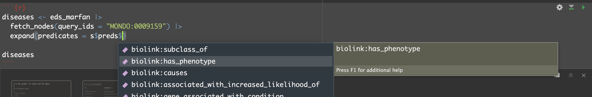

vignettes/examples/exploring_kgs.Rmd
exploring_kgs.RmdKnowledge Graphs (KGs) may contain large amounts of information; the Monarch Initiative KG for example contains not only millions of nodes and edges, but each node may belong to one or more categories, across dozens of available categories. While edges may only have a single predicate linking a subject and object node, there are similarly dozens of available predicates. Each node category and edge predicate may further come with other node or edge properties, and these may be shared across some but not all node categories or edge predicates.
To help navigate this extensive information, monarchr
provides two functions that may be applied to KG engines: a
summary() function that counts these categories and
predicates across nodes and edges, and an example_graph()
function that returns a (non-random) subgraph gauranteed to represent
every node category and edge predicate.
As usual, we being by loading the monarchr package,
along with tidygraph and dplyr which tend to
be useful (but we will not actually use in this vignette).
summary()
The summary function, when applied to a KG engine (like
file_engine(), neo4j_engine(), or the
cloud-hosted monarch_engine()), prints counts of nodes and
edges broken out by available node category and edge predicate. To keep
the information small, we’ll produce a summary of the included mini-KG
containing information about Ehlers-Danlos Syndrome (EDS) and Marfan
Syndrome:
filename <- system.file("extdata", "eds_marfan_kg.tar.gz", package = "monarchr")
eds_marfan <- file_engine(filename)
summary(eds_marfan)##
## A KGX file-backed knowledge graph engine.
## Total nodes: 3000
## Total edges: 7148
##
## Node category counts:
## category count
## biolink:Entity 3000
## biolink:NamedThing 3000
## biolink:BiologicalEntity 2977
## biolink:ThingWithTaxon 2977
## biolink:DiseaseOrPhenotypicFeature 2846
## biolink:PhenotypicFeature 2736
## biolink:PhysicalEssence 145
## biolink:PhysicalEssenceOrOccurrent 145
## biolink:GenomicEntity 131
## biolink:OntologyClass 131
## biolink:Disease 110
## biolink:SequenceVariant 81
## biolink:ChemicalEntityOrGeneOrGeneProduct 37
## biolink:Genotype 27
## biolink:Gene 23
## biolink:GeneOrGeneProduct 23
## biolink:MacromolecularMachineMixin 23
## biolink:ChemicalEntity 14
## biolink:ChemicalEntityOrProteinOrPolypeptide 14
## biolink:ChemicalOrDrugOrTreatment 14
## biolink:MolecularEntity 13
##
## Edge type counts:
## predicate count
## biolink:subclass_of 5244
## biolink:has_phenotype 1709
## biolink:causes 56
## biolink:associated_with_increased_likelihood_of 38
## biolink:gene_associated_with_condition 28
## biolink:model_of 27
## biolink:has_mode_of_inheritance 26
## biolink:genetically_associated_with 11
## biolink:related_to 8
## biolink:treats_or_applied_or_studied_to_treat 1The printout reports the number of nodes for each category, and the number of edges for each predicate.
This information is also returned (invisibly) as a list; to suppress
the printed output we can add quiet = TRUE.
## [1] "Total nodes: 3000"
paste("Total edges:", s$total_edges)## [1] "Total edges: 7148"
head(s$node_summary)## category count
## 1 biolink:Entity 3000
## 2 biolink:NamedThing 3000
## 3 biolink:BiologicalEntity 2977
## 4 biolink:ThingWithTaxon 2977
## 5 biolink:DiseaseOrPhenotypicFeature 2846
## 6 biolink:PhenotypicFeature 2736
head(s$edge_summary)## predicate count
## 1 biolink:subclass_of 5244
## 2 biolink:has_phenotype 1709
## 3 biolink:causes 56
## 4 biolink:associated_with_increased_likelihood_of 38
## 5 biolink:gene_associated_with_condition 28
## 6 biolink:model_of 27Finally, the returned list also includes cats and
pred entries, which are named lists containing all
available category and predicate labels for convenient auto-completion
in your favorite IDE.

The resulting auto-completion inserts the appropriate backtics in RStudio.
diseases <- eds_marfan |>
fetch_nodes(query_ids = "MONDO:0009159") |>
expand(predicates = s$preds$`biolink:has_phenotype`)
diseasesGraph with 51 nodes and 50 edges. Expand sections below for details.
Showing 51 of 51 nodes:
| id | pcategory | name | symbol | in_taxon_label | description | synonym (list) | category (list) | iri | xref (list) | namespace | provided_by | in_taxon | full_name | type (list) | has_gene |
|---|---|---|---|---|---|---|---|---|---|---|---|---|---|---|---|
| “MONDO:0009159” | “biolink:Disease” | “Ehlers-Danlos syndrome, cardiac valvular type” | NA | NA | “Ehlers-Danlos syndrome, cardiac valvular type is a form of Ehlers-Danlos syndrome characterized by soft skin, skin hyperextensibility, easy bruisability, atrophic scar formation, joint hypermobility and cardiac valvular defects comprising mitral and/or aortic valve insufficiency.” | c(“Cardiac valvular form of Ehlers-Danlos syndrome”, “Cardiac valvular form of autosomal recessive Ehlers-Danlos syndrome”, “Cardiac-valvular EDS”, “Cardiac-valvular Ehlers-Danlos syndrome”, “EDS, cardiac valvular type”, “EDSCV”, “Ehlers-Danlos syndrome, CARDIAC valvular type”, “Ehlers-Danlos syndrome, arthrochalasis type”, “Ehlers-Danlos syndrome, autosomal recessive, CARDIAC valvular form”, “Ehlers-Danlos syndrome, autosomal recessive, Cardiac valvular form”, “cvEDS”) | c(“biolink:BiologicalEntity”, “biolink:Disease”, “biolink:DiseaseOrPhenotypicFeature”, “biolink:Entity”, “biolink:NamedThing”, “biolink:ThingWithTaxon”) | “http://purl.obolibrary.org/obo/MONDO_0009159” | c(“DOID:0080730”, “GARD:12613”, “MESH:C536200”, “OMIM:225320”, “Orphanet:230851”, “SCTID:720858001”) | “MONDO” | “phenio_nodes” | NA | NA | NA | NA |
| “HP:0000974” | “biolink:PhenotypicFeature” | “Hyperextensible skin” | NA | NA | “A condition in which the skin can be stretched beyond normal, and then returns to its initial position.” | c(“Hyperelastic skin”, “Skin hyperelasticity”, “Skin hyperextensibility”, “Stretchable skin”) | c(“biolink:BiologicalEntity”, “biolink:DiseaseOrPhenotypicFeature”, “biolink:Entity”, “biolink:NamedThing”, “biolink:PhenotypicFeature”, “biolink:ThingWithTaxon”) | “http://purl.obolibrary.org/obo/HP_0000974” | “UMLS:C0241074” | “HP” | “phenio_nodes” | NA | NA | NA | NA |
| “HP:0001382” | “biolink:PhenotypicFeature” | “Joint hypermobility” | NA | NA | “The ability of a joint to move beyond its normal range of motion.” | c(“Double-Jointed”, “Extensible joints”, “Flexible joints”, “Hyperextensible joints”, “Increased joint mobility”, “Increased mobility of joints”, “Joint hyperextensibility”) | c(“biolink:BiologicalEntity”, “biolink:DiseaseOrPhenotypicFeature”, “biolink:Entity”, “biolink:NamedThing”, “biolink:PhenotypicFeature”, “biolink:ThingWithTaxon”) | “http://purl.obolibrary.org/obo/HP_0001382” | c(“SNOMEDCT_US:298181000”, “UMLS:C1844820”) | “HP” | “phenio_nodes” | NA | NA | NA | NA |
| “HP:0001653” | “biolink:PhenotypicFeature” | “Mitral regurgitation” | NA | NA | “An abnormality of the mitral valve characterized by insufficiency or incompetence of the mitral valve resulting in retrograde leaking of blood through the mitral valve upon ventricular contraction.” | c(“Mitral incompetence”, “Mitral insufficiency”, “Mitral regurgitation, mild”, “Mitral valve insufficiency”, “Mitral valve regurgitation”) | c(“biolink:BiologicalEntity”, “biolink:DiseaseOrPhenotypicFeature”, “biolink:Entity”, “biolink:NamedThing”, “biolink:PhenotypicFeature”, “biolink:ThingWithTaxon”) | “http://purl.obolibrary.org/obo/HP_0001653” | c(“Fyler:1151”, “MSH:D008944”, “SNOMEDCT_US:48724000”, “UMLS:C0026266”, “UMLS:C3551535”) | “HP” | “phenio_nodes” | NA | NA | NA | NA |
| “HP:0001654” | “biolink:PhenotypicFeature” | “Abnormal heart valve morphology” | NA | NA | “Any structural abnormality of a cardiac valve.” | c(“Abnormality of the heart valves”, “Valvular abnormality”, “Valvular heart disease”) | c(“biolink:BiologicalEntity”, “biolink:DiseaseOrPhenotypicFeature”, “biolink:Entity”, “biolink:NamedThing”, “biolink:PhenotypicFeature”, “biolink:ThingWithTaxon”) | “http://purl.obolibrary.org/obo/HP_0001654” | c(“MSH:D006349”, “SNOMEDCT_US:368009”, “UMLS:C0018824”, “UMLS:C0241654”) | “HP” | “phenio_nodes” | NA | NA | NA | NA |
| “HP:0000023” | “biolink:PhenotypicFeature” | “Inguinal hernia” | NA | NA | “Protrusion of the contents of the abdominal cavity through the inguinal canal.” | NA | c(“biolink:BiologicalEntity”, “biolink:DiseaseOrPhenotypicFeature”, “biolink:Entity”, “biolink:NamedThing”, “biolink:PhenotypicFeature”, “biolink:ThingWithTaxon”) | “http://purl.obolibrary.org/obo/HP_0000023” | c(“MEDDRA:10022016”, “MSH:D006552”, “SNOMEDCT_US:396232000”, “UMLS:C0019294”) | “HP” | “phenio_nodes” | NA | NA | NA | NA |
| “HP:0000486” | “biolink:PhenotypicFeature” | “Strabismus” | NA | NA | “A misalignment of the eyes so that the visual axes deviate from bifoveal fixation. The classification of strabismus may be based on a number of features including the relative position of the eyes, whether the deviation is latent or manifest, intermittent or constant, concomitant or otherwise and according to the age of onset and the relevance of any associated refractive error.” | c(“Cross-eyed”, “Squint”, “Squint eyes”) | c(“biolink:BiologicalEntity”, “biolink:DiseaseOrPhenotypicFeature”, “biolink:Entity”, “biolink:NamedThing”, “biolink:PhenotypicFeature”, “biolink:ThingWithTaxon”) | “http://purl.obolibrary.org/obo/HP_0000486” | c(“MSH:D013285”, “SNOMEDCT_US:128602000”, “SNOMEDCT_US:22066006”, “UMLS:C0038379”) | “HP” | “phenio_nodes” | NA | NA | NA | NA |
| “HP:0000508” | “biolink:PhenotypicFeature” | “Ptosis” | NA | NA | “The upper eyelid margin is positioned 3 mm or more lower than usual and covers the superior portion of the iris (objective); or, the upper lid margin obscures at least part of the pupil (subjective).” | c(“Blepharoptosis”, “Drooping upper eyelid”, “Eye drop”, “Eyelid ptosis”) | c(“biolink:BiologicalEntity”, “biolink:DiseaseOrPhenotypicFeature”, “biolink:Entity”, “biolink:NamedThing”, “biolink:PhenotypicFeature”, “biolink:ThingWithTaxon”) | “http://purl.obolibrary.org/obo/HP_0000508” | c(“MSH:D001763”, “SNOMEDCT_US:11934000”, “UMLS:C0005745”) | “HP” | “phenio_nodes” | NA | NA | NA | NA |
| “HP:0000545” | “biolink:PhenotypicFeature” | “Myopia” | NA | NA | “An abnormality of refraction characterized by the ability to see objects nearby clearly, while objects in the distance appear blurry.” | c(“Close sighted”, “Near sighted”, “Near sightedness”, “Nearsightedness”) | c(“biolink:BiologicalEntity”, “biolink:DiseaseOrPhenotypicFeature”, “biolink:Entity”, “biolink:NamedThing”, “biolink:PhenotypicFeature”, “biolink:ThingWithTaxon”) | “http://purl.obolibrary.org/obo/HP_0000545” | c(“MSH:D009216”, “SNOMEDCT_US:57190000”, “UMLS:C0027092”) | “HP” | “phenio_nodes” | NA | NA | NA | NA |
| “HP:0000678” | “biolink:PhenotypicFeature” | “Dental crowding” | NA | NA | “Changes in alignment of teeth in the dental arch” | c(“Crowded teeth”, “Dental crowding”, “Dental overcrowding”, “Inadequate arch length for tooth size”, “Overcrowding of teeth”, “Tooth mass arch size discrepancy”, “Tooth size discrepancy”) | c(“biolink:BiologicalEntity”, “biolink:DiseaseOrPhenotypicFeature”, “biolink:Entity”, “biolink:NamedThing”, “biolink:PhenotypicFeature”, “biolink:ThingWithTaxon”) | “http://purl.obolibrary.org/obo/HP_0000678” | c(“MSH:D008310”, “SNOMEDCT_US:12351004”, “SNOMEDCT_US:699222000”, “UMLS:C0040433”, “UMLS:C1317785”, “UMLS:C4280617”, “UMLS:C4280618”) | “HP” | “phenio_nodes” | NA | NA | NA | NA |
| “HP:0000767” | “biolink:PhenotypicFeature” | “Pectus excavatum” | NA | NA | “A defect of the chest wall characterized by a depression of the sternum, giving the chest (""pectus"") a caved-in (""excavatum"") appearance."” | “Funnel chest” | c(“biolink:BiologicalEntity”, “biolink:DiseaseOrPhenotypicFeature”, “biolink:Entity”, “biolink:NamedThing”, “biolink:PhenotypicFeature”, “biolink:ThingWithTaxon”) | “http://purl.obolibrary.org/obo/HP_0000767” | c(“SNOMEDCT_US:391987005”, “UMLS:C2051831”) | “HP” | “phenio_nodes” | NA | NA | NA | NA |
| “HP:0000963” | “biolink:PhenotypicFeature” | “Thin skin” | NA | NA | “Reduction in thickness of the skin, generally associated with a loss of suppleness and elasticity of the skin.” | “Thin skin” | c(“biolink:BiologicalEntity”, “biolink:DiseaseOrPhenotypicFeature”, “biolink:Entity”, “biolink:NamedThing”, “biolink:PhenotypicFeature”, “biolink:ThingWithTaxon”) | “http://purl.obolibrary.org/obo/HP_0000963” | c(“SNOMEDCT_US:277797007”, “UMLS:C0423757”) | “HP” | “phenio_nodes” | NA | NA | NA | NA |
| “HP:0000978” | “biolink:PhenotypicFeature” | “Bruising susceptibility” | NA | NA | “An ecchymosis (bruise) refers to the skin discoloration caused by the escape of blood into the tissues from ruptured blood vessels. This term refers to an abnormally increased susceptibility to bruising. The corresponding phenotypic abnormality is generally elicited on medical history as a report of frequent ecchymoses or bruising without adequate trauma.” | c(“Bruisability”, “Bruise easily”, “Bruising susceptibility”, “Easy bruisability”, “Easy bruising”) | c(“biolink:BiologicalEntity”, “biolink:DiseaseOrPhenotypicFeature”, “biolink:Entity”, “biolink:NamedThing”, “biolink:PhenotypicFeature”, “biolink:ThingWithTaxon”) | “http://purl.obolibrary.org/obo/HP_0000978” | c(“MSH:D004438”, “SNOMEDCT_US:302227002”, “SNOMEDCT_US:424131007”, “SNOMEDCT_US:425075004”, “SNOMEDCT_US:77643000”, “UMLS:C0013491”, “UMLS:C0423798”) | “HP” | “phenio_nodes” | NA | NA | NA | NA |
| “HP:0001027” | “biolink:PhenotypicFeature” | “Soft, doughy skin” | NA | NA | “A skin texture that is unusually soft (and may feel silky), and has a malleable consistency resembling that of dough.” | “Soft, doughy skin” | c(“biolink:BiologicalEntity”, “biolink:DiseaseOrPhenotypicFeature”, “biolink:Entity”, “biolink:NamedThing”, “biolink:PhenotypicFeature”, “biolink:ThingWithTaxon”) | “http://purl.obolibrary.org/obo/HP_0001027” | “UMLS:C1849043” | “HP” | “phenio_nodes” | NA | NA | NA | NA |
| “HP:0001058” | “biolink:PhenotypicFeature” | “Poor wound healing” | NA | NA | “A reduced ability to heal cutaneous wounds.” | “Poor wound healing” | c(“biolink:BiologicalEntity”, “biolink:DiseaseOrPhenotypicFeature”, “biolink:Entity”, “biolink:NamedThing”, “biolink:PhenotypicFeature”, “biolink:ThingWithTaxon”) | “http://purl.obolibrary.org/obo/HP_0001058” | “UMLS:C1851789” | “HP” | “phenio_nodes” | NA | NA | NA | NA |
| “HP:0001075” | “biolink:PhenotypicFeature” | “Atrophic scars” | NA | NA | “Scars that form a depression compared to the level of the surrounding skin because of damage to the collagen, fat or other tissues below the skin.” | c(“Sunken or indented skin due to damage”, “Thin, atrophic scars”) | c(“biolink:BiologicalEntity”, “biolink:DiseaseOrPhenotypicFeature”, “biolink:Entity”, “biolink:NamedThing”, “biolink:PhenotypicFeature”, “biolink:ThingWithTaxon”) | “http://purl.obolibrary.org/obo/HP_0001075” | c(“SNOMEDCT_US:239172000”, “SNOMEDCT_US:409766009”, “UMLS:C0162154”) | “HP” | “phenio_nodes” | NA | NA | NA | NA |
| “HP:0001373” | “biolink:PhenotypicFeature” | “Joint dislocation” | NA | NA | “Displacement or malalignment of joints.” | c(“Joint dislocation”, “Joint dislocations”) | c(“biolink:BiologicalEntity”, “biolink:DiseaseOrPhenotypicFeature”, “biolink:Entity”, “biolink:NamedThing”, “biolink:PhenotypicFeature”, “biolink:ThingWithTaxon”) | “http://purl.obolibrary.org/obo/HP_0001373” | c(“MSH:D004204”, “SNOMEDCT_US:108367008”, “SNOMEDCT_US:87642003”, “UMLS:C0012691”) | “HP” | “phenio_nodes” | NA | NA | NA | NA |
| “HP:0001659” | “biolink:PhenotypicFeature” | “Aortic regurgitation” | NA | NA | “An insufficiency of the aortic valve, leading to regurgitation (backward flow) of blood from the aorta into the left ventricle.” | c(“Aortic insufficiency”, “Aortic valve regurgitation”) | c(“biolink:BiologicalEntity”, “biolink:DiseaseOrPhenotypicFeature”, “biolink:Entity”, “biolink:NamedThing”, “biolink:PhenotypicFeature”, “biolink:ThingWithTaxon”) | “http://purl.obolibrary.org/obo/HP_0001659” | c(“MSH:D001022”, “SNOMEDCT_US:60234000”, “UMLS:C0003504”) | “HP” | “phenio_nodes” | NA | NA | NA | NA |
| “HP:0001763” | “biolink:PhenotypicFeature” | “Pes planus” | NA | NA | “A foot where the longitudinal arch of the foot is in contact with the ground or floor when the individual is standing; or, in a patient lying supine, a foot where the arch is in contact with the surface of a flat board pressed against the sole of the foot by the examiner with a pressure similar to that expected from weight bearing; or, the height of the arch is reduced.” | c(“Dropped arches”, “Fallen arches”, “Flat feet”, “Flat foot”) | c(“biolink:BiologicalEntity”, “biolink:DiseaseOrPhenotypicFeature”, “biolink:Entity”, “biolink:NamedThing”, “biolink:PhenotypicFeature”, “biolink:ThingWithTaxon”) | “http://purl.obolibrary.org/obo/HP_0001763” | c(“MSH:D005413”, “SNOMEDCT_US:203534009”, “SNOMEDCT_US:53226007”, “UMLS:C0016202”, “UMLS:C0264133”) | “HP” | “phenio_nodes” | NA | NA | NA | NA |
| “HP:0001822” | “biolink:PhenotypicFeature” | “Hallux valgus” | NA | NA | “Lateral deviation of the great toe (i.e., in the direction of the little toe).” | c(“Bunion”, “Lateral deviation of great toe”, “Lateral deviation of halluces”) | c(“biolink:BiologicalEntity”, “biolink:DiseaseOrPhenotypicFeature”, “biolink:Entity”, “biolink:NamedThing”, “biolink:PhenotypicFeature”, “biolink:ThingWithTaxon”) | “http://purl.obolibrary.org/obo/HP_0001822” | c(“MSH:D000071378”, “MSH:D006215”, “SNOMEDCT_US:122480009”, “SNOMEDCT_US:415692008”, “UMLS:C0006386”, “UMLS:C0018536”) | “HP” | “phenio_nodes” | NA | NA | NA | NA |
| “HP:0002616” | “biolink:PhenotypicFeature” | “Aortic root aneurysm” | NA | NA | “An abnormal localized widening (dilatation) of the aortic root.” | c(“Aortic root dilatation”, “Bulge in wall of root of large artery that carries blood away from heart”, “Increased aortic root diameter”) | c(“biolink:BiologicalEntity”, “biolink:DiseaseOrPhenotypicFeature”, “biolink:Entity”, “biolink:NamedThing”, “biolink:PhenotypicFeature”, “biolink:ThingWithTaxon”) | “http://purl.obolibrary.org/obo/HP_0002616” | c(“SNOMEDCT_US:251036003”, “UMLS:C0238669”) | “HP” | “phenio_nodes” | NA | NA | NA | NA |
| “HP:0002816” | “biolink:PhenotypicFeature” | “Genu recurvatum” | NA | NA | “An abnormally increased extension of the knee joint, so that the knee can bend backwards.” | c(“Back knee”, “Genu recurvata”, “Knee hyperextension”) | c(“biolink:BiologicalEntity”, “biolink:DiseaseOrPhenotypicFeature”, “biolink:Entity”, “biolink:NamedThing”, “biolink:PhenotypicFeature”, “biolink:ThingWithTaxon”) | “http://purl.obolibrary.org/obo/HP_0002816” | c(“MEDDRA:10018194”, “UMLS:C0546964”) | “HP” | “phenio_nodes” | NA | NA | NA | NA |
| “HP:0002857” | “biolink:PhenotypicFeature” | “Genu valgum” | NA | NA | “The legs angle inward, such that the knees are close together and the ankles far apart.” | c(“Genu valga”, “Genu valgus”, “Genua valga”, “Knee joint valgus deformity”, “Knock knees”) | c(“biolink:BiologicalEntity”, “biolink:DiseaseOrPhenotypicFeature”, “biolink:Entity”, “biolink:NamedThing”, “biolink:PhenotypicFeature”, “biolink:ThingWithTaxon”) | “http://purl.obolibrary.org/obo/HP_0002857” | c(“MEDDRA:10023480”, “MSH:D056304”, “SNOMEDCT_US:299330008”, “UMLS:C0576093”) | “HP” | “phenio_nodes” | NA | NA | NA | NA |
| “HP:0005180” | “biolink:PhenotypicFeature” | “Tricuspid regurgitation” | NA | NA | “Failure of the tricuspid valve to close sufficiently upon contraction of the right ventricle, causing blood to regurgitate (flow backward) into the right atrium.” | c(“Tricuspid insufficiency”, “Tricuspid valve regurgitation”) | c(“biolink:BiologicalEntity”, “biolink:DiseaseOrPhenotypicFeature”, “biolink:Entity”, “biolink:NamedThing”, “biolink:PhenotypicFeature”, “biolink:ThingWithTaxon”) | “http://purl.obolibrary.org/obo/HP_0005180” | c(“Fyler:1161”, “MSH:D014262”, “SNOMEDCT_US:111287006”, “UMLS:C0040961”) | “HP” | “phenio_nodes” | NA | NA | NA | NA |
| “HP:0006109” | “biolink:PhenotypicFeature” | “Absent phalangeal crease” | NA | NA | “Absence of one or more interphalangeal creases (i.e., of the transverse lines in the skin between the phalanges of the fingers).” | c(“Absent interphalangeal creases”, “Aplasia of the interphalangeal creases”) | c(“biolink:BiologicalEntity”, “biolink:DiseaseOrPhenotypicFeature”, “biolink:Entity”, “biolink:NamedThing”, “biolink:PhenotypicFeature”, “biolink:ThingWithTaxon”) | “http://purl.obolibrary.org/obo/HP_0006109” | c(“UMLS:C1862479”, “UMLS:C4020821”) | “HP” | “phenio_nodes” | NA | NA | NA | NA |
| “HP:0006201” | “biolink:PhenotypicFeature” | “Hypermobility of distal interphalangeal joints” | NA | NA | NA | “Increased mobility of outermost hinge joint” | c(“biolink:BiologicalEntity”, “biolink:DiseaseOrPhenotypicFeature”, “biolink:Entity”, “biolink:NamedThing”, “biolink:PhenotypicFeature”, “biolink:ThingWithTaxon”) | “http://purl.obolibrary.org/obo/HP_0006201” | “UMLS:C1851811” | “HP” | “phenio_nodes” | NA | NA | NA | NA |
| “HP:0100807” | “biolink:PhenotypicFeature” | “Long fingers” | NA | NA | “The middle finger is more than 2 SD above the mean for newborns 27 to 41 weeks EGA or above the 97th centile for children from birth to 16 years of age AND the five digits retain their normal length proportions relative to each other (i.e., it is not the case that the middle finger is the only lengthened digit), or, Fingers that appear disproportionately long compared to the palm of the hand.” | “Long fingers” | c(“biolink:BiologicalEntity”, “biolink:DiseaseOrPhenotypicFeature”, “biolink:Entity”, “biolink:NamedThing”, “biolink:PhenotypicFeature”, “biolink:ThingWithTaxon”) | “http://purl.obolibrary.org/obo/HP_0100807” | “UMLS:C1858091” | “HP” | “phenio_nodes” | NA | NA | NA | NA |
| “HP:0000218” | “biolink:PhenotypicFeature” | “High palate” | NA | NA | “Height of the palate more than 2 SD above the mean (objective) or palatal height at the level of the first permanent molar more than twice the height of the teeth (subjective).” | c(“Elevated palate”, “High arched palate”, “High palate”, “High, arched palate”, “High-arched palate”, “Increased palatal height”, “Ogival palate”, “Palate high-arched”, “Palate, high-arched”) | c(“biolink:BiologicalEntity”, “biolink:DiseaseOrPhenotypicFeature”, “biolink:Entity”, “biolink:NamedThing”, “biolink:PhenotypicFeature”, “biolink:ThingWithTaxon”) | “http://purl.obolibrary.org/obo/HP_0000218” | c(“SNOMEDCT_US:27272007”, “UMLS:C0240635”) | “HP” | “phenio_nodes” | NA | NA | NA | NA |
| “HP:0000414” | “biolink:PhenotypicFeature” | “Bulbous nose” | NA | NA | “Increased volume and globular shape of the anteroinferior aspect of the nose.” | c(“Bulbous nasal tip”, “Bulbous nose”, “Potato nose”) | c(“biolink:BiologicalEntity”, “biolink:DiseaseOrPhenotypicFeature”, “biolink:Entity”, “biolink:NamedThing”, “biolink:PhenotypicFeature”, “biolink:ThingWithTaxon”) | “http://purl.obolibrary.org/obo/HP_0000414” | c(“MSH:C538354”, “UMLS:C0240543”, “UMLS:C1834118”, “UMLS:C1855751”) | “HP” | “phenio_nodes” | NA | NA | NA | NA |
| “HP:0000574” | “biolink:PhenotypicFeature” | “Thick eyebrow” | NA | NA | “Increased density/number and/or increased diameter of eyebrow hairs.” | c(“Bushy eyebrows”, “Dense eyebrow”, “Heavy eyebrows”, “Hypertrichosis of the eyebrow”, “Hypertrichosis of the eyebrows”, “Prominent eyebrows”, “Thick eyebrow”, “Thick eyebrows”) | c(“biolink:BiologicalEntity”, “biolink:DiseaseOrPhenotypicFeature”, “biolink:Entity”, “biolink:NamedThing”, “biolink:PhenotypicFeature”, “biolink:ThingWithTaxon”) | “http://purl.obolibrary.org/obo/HP_0000574” | “UMLS:C1853487” | “HP” | “phenio_nodes” | NA | NA | NA | NA |
| “HP:0001250” | “biolink:PhenotypicFeature” | “Seizure” | NA | NA | “A seizure is an intermittent abnormality of nervous system physiology characterised by a transient occurrence of signs and/or symptoms due to abnormal excessive or synchronous neuronal activity in the brain.” | c(“Epilepsy”, “Epileptic seizure”, “Seizures”) | c(“biolink:BiologicalEntity”, “biolink:DiseaseOrPhenotypicFeature”, “biolink:Entity”, “biolink:NamedThing”, “biolink:PhenotypicFeature”, “biolink:ThingWithTaxon”) | “http://purl.obolibrary.org/obo/HP_0001250” | c(“MSH:D004827”, “MSH:D012640”, “SNOMEDCT_US:128613002”, “SNOMEDCT_US:246545002”, “SNOMEDCT_US:313307000”, “SNOMEDCT_US:84757009”, “SNOMEDCT_US:91175000”, “UMLS:C0014544”, “UMLS:C0036572”) | “HP” | “phenio_nodes” | NA | NA | NA | NA |
| “HP:0001263” | “biolink:PhenotypicFeature” | “Global developmental delay” | NA | NA | “A delay in the achievement of motor or mental milestones in the domains of development of a child, including motor skills, speech and language, cognitive skills, and social and emotional skills. This term should only be used to describe children younger than five years of age.” | c(“Cognitive delay”, “Delayed cognitive development”, “Delayed development”, “Delayed developmental milestones”, “Delayed intellectual development”, “Delayed milestones”, “Delayed psychomotor development”, “Developmental delay”, “Developmental delay in early childhood”, “Developmental delay, global”, “Developmental retardation”, “Lack of psychomotor development”, “Mental and motor retardation”, “Motor and developmental delay”, “Motormental retardation”, “Psychomotor delay”, “Psychomotor development deficiency”, “Psychomotor development failure”, “Psychomotor developmental delay”, “Retarded development”, “Retarded mental development”, “Retarded psychomotor development”) | c(“biolink:BiologicalEntity”, “biolink:DiseaseOrPhenotypicFeature”, “biolink:Entity”, “biolink:NamedThing”, “biolink:PhenotypicFeature”, “biolink:ThingWithTaxon”) | “http://purl.obolibrary.org/obo/HP_0001263” | c(“SNOMEDCT_US:224958001”, “UMLS:C0557874”, “UMLS:C1864897”, “UMLS:C4020875”) | “HP” | “phenio_nodes” | NA | NA | NA | NA |
| “HP:0001519” | “biolink:PhenotypicFeature” | “Disproportionate tall stature” | NA | NA | “A tall and slim body build with increased arm span to height ratio (>1.05) and a reduced upper-to-lower segment ratio (<0.85), i.e., unusually long arms and legs. The extremities as well as the hands and feet are unusually slim.” | c(“Dolichostenomelia”, “Marfanoid body habitus”, “Marfanoid habitus”, “Reduced upper-lower segment ratio”) | c(“biolink:BiologicalEntity”, “biolink:DiseaseOrPhenotypicFeature”, “biolink:Entity”, “biolink:NamedThing”, “biolink:PhenotypicFeature”, “biolink:ThingWithTaxon”) | “http://purl.obolibrary.org/obo/HP_0001519” | c(“MSH:D054119”, “SNOMEDCT_US:62250003”, “UMLS:C0003706”, “UMLS:C1836996”) | “HP” | “phenio_nodes” | NA | NA | NA | NA |
| “HP:0001631” | “biolink:PhenotypicFeature” | “Atrial septal defect” | NA | NA | “Atrial septal defect (ASD) is a congenital abnormality of the interatrial septum that enables blood flow between the left and right atria via the interatrial septum.” | c(“ASD”, “An opening in the wall separating the top two chambers of the heart”, “Atria septal defect”, “Atrial septum defect”, “Atrioseptal defect”, “Defect in the atrial septum”, “Hole in heart wall separating two upper heart chambers”) | c(“biolink:BiologicalEntity”, “biolink:DiseaseOrPhenotypicFeature”, “biolink:Entity”, “biolink:NamedThing”, “biolink:PhenotypicFeature”, “biolink:ThingWithTaxon”) | “http://purl.obolibrary.org/obo/HP_0001631” | c(“Fyler:2050”, “ICD-10:Q21.1”, “MSH:D006344”, “SNOMEDCT_US:253366007”, “SNOMEDCT_US:405752007”, “SNOMEDCT_US:70142008”, “UMLS:C0018817”) | “HP” | “phenio_nodes” | NA | NA | NA | NA |
| “HP:0001634” | “biolink:PhenotypicFeature” | “Mitral valve prolapse” | NA | NA | “One or both of the leaflets (cusps) of the mitral valve bulges back into the left atrium upon contraction of the left ventricle.” | NA | c(“biolink:BiologicalEntity”, “biolink:DiseaseOrPhenotypicFeature”, “biolink:Entity”, “biolink:NamedThing”, “biolink:PhenotypicFeature”, “biolink:ThingWithTaxon”) | “http://purl.obolibrary.org/obo/HP_0001634” | c(“Fyler:1533”, “MSH:D008945”, “SNOMEDCT_US:409712001”, “SNOMEDCT_US:8074002”, “UMLS:C0026267”) | “HP” | “phenio_nodes” | NA | NA | NA | NA |
| “HP:0001712” | “biolink:PhenotypicFeature” | “Left ventricular hypertrophy” | NA | NA | “Enlargement or increased size of the heart left ventricle.” | c(“Heart left ventricle hypertrophy”, “Left ventricular wall hypertrophy”) | c(“biolink:BiologicalEntity”, “biolink:DiseaseOrPhenotypicFeature”, “biolink:Entity”, “biolink:NamedThing”, “biolink:PhenotypicFeature”, “biolink:ThingWithTaxon”) | “http://purl.obolibrary.org/obo/HP_0001712” | c(“Fyler:3608”, “MSH:D017379”, “SNOMEDCT_US:55827005”, “UMLS:C0149721”) | “HP” | “phenio_nodes” | NA | NA | NA | NA |
| “HP:0001848” | “biolink:PhenotypicFeature” | “Calcaneovalgus deformity” | NA | NA | “This is a postural deformity in which the foot is positioned up against the tibia. The heel (calcaneus) is positioned downward (that is, the ankle is flexed upward), and the heel is turned outward (valgus).” | c(“Calcaneovalgus”, “Calcaneovalgus Foot”, “Foot and ankle bend up toward shin of leg”, “Valgus position of the calcaneus”) | c(“biolink:BiologicalEntity”, “biolink:DiseaseOrPhenotypicFeature”, “biolink:Entity”, “biolink:NamedThing”, “biolink:PhenotypicFeature”, “biolink:ThingWithTaxon”) | “http://purl.obolibrary.org/obo/HP_0001848” | “UMLS:C1860450” | “HP” | “phenio_nodes” | NA | NA | NA | NA |
| “HP:0001852” | “biolink:PhenotypicFeature” | “Sandal gap” | NA | NA | “A widely spaced gap between the first toe (the great toe) and the second toe.” | c(“Gap between 1st and 2nd toes”, “Gap between first and second toe”, “Increased space between first and second toes”, “Sandal gap between first and second toes”, “Space between great toe and second toe”, “Wide space between 1st, 2nd toes”, “Wide space between first and second toes”, “Wide-spaced big toe”, “Widely spaced 1st-2nd toes”, “Widely spaced first and second toes”, “Widened gap 1st-2nd toes”, “Widened gap first and second toe”) | c(“biolink:BiologicalEntity”, “biolink:DiseaseOrPhenotypicFeature”, “biolink:Entity”, “biolink:NamedThing”, “biolink:PhenotypicFeature”, “biolink:ThingWithTaxon”) | “http://purl.obolibrary.org/obo/HP_0001852” | “UMLS:C1840069” | “HP” | “phenio_nodes” | NA | NA | NA | NA |
| “HP:0002094” | “biolink:PhenotypicFeature” | “Dyspnea” | NA | NA | “Difficult or labored breathing. Dyspnea is a subjective feeling only the patient can rate, e.g., on a Borg scale.” | c(“Abnormal breathing”, “Breathing difficulty”, “Difficult to breathe”, “Difficulty breathing”, “Dyspnoea”, “Panting”, “Shortness of breath”, “Trouble breathing”) | c(“biolink:BiologicalEntity”, “biolink:DiseaseOrPhenotypicFeature”, “biolink:Entity”, “biolink:NamedThing”, “biolink:PhenotypicFeature”, “biolink:ThingWithTaxon”) | “http://purl.obolibrary.org/obo/HP_0002094” | c(“MSH:D004417”, “SNOMEDCT_US:230145002”, “SNOMEDCT_US:267036007”, “UMLS:C0013404”) | “HP” | “phenio_nodes” | NA | NA | NA | NA |
| “HP:0002342” | “biolink:PhenotypicFeature” | “Intellectual disability, moderate” | NA | NA | “Moderate mental retardation is defined as an intelligence quotient (IQ) in the range of 35-49.” | c(“IQ between 34 and 49”, “Mental retardation, moderate”, “Moderate mental deficiency”, “Moderate mental retardation”) | c(“biolink:BiologicalEntity”, “biolink:DiseaseOrPhenotypicFeature”, “biolink:Entity”, “biolink:NamedThing”, “biolink:PhenotypicFeature”, “biolink:ThingWithTaxon”) | “http://purl.obolibrary.org/obo/HP_0002342” | c(“SNOMEDCT_US:61152003”, “UMLS:C0026351”) | “HP” | “phenio_nodes” | NA | NA | NA | NA |
| “HP:0002751” | “biolink:PhenotypicFeature” | “Kyphoscoliosis” | NA | NA | “An abnormal curvature of the spine in both a coronal (lateral) and sagittal (back-to-front) plane.” | NA | c(“biolink:BiologicalEntity”, “biolink:DiseaseOrPhenotypicFeature”, “biolink:Entity”, “biolink:NamedThing”, “biolink:PhenotypicFeature”, “biolink:ThingWithTaxon”) | “http://purl.obolibrary.org/obo/HP_0002751” | c(“SNOMEDCT_US:405773007”, “UMLS:C0575158”) | “HP” | “phenio_nodes” | NA | NA | NA | NA |
| “HP:0002944” | “biolink:PhenotypicFeature” | “Thoracolumbar scoliosis” | NA | NA | NA | “Scoliosis, thoracolumbar” | c(“biolink:BiologicalEntity”, “biolink:DiseaseOrPhenotypicFeature”, “biolink:Entity”, “biolink:NamedThing”, “biolink:PhenotypicFeature”, “biolink:ThingWithTaxon”) | “http://purl.obolibrary.org/obo/HP_0002944” | “UMLS:C0749379” | “HP” | “phenio_nodes” | NA | NA | NA | NA |
| “HP:0004322” | “biolink:PhenotypicFeature” | “Short stature” | NA | NA | “A height below that which is expected according to age and gender norms. Although there is no universally accepted definition of short stature, many refer to ""short stature"" as height more than 2 standard deviations below the mean for age and gender (or below the 3rd percentile for age and gender dependent norms)."” | c(“Decreased body height”, “Height less than 3rd percentile”, “Short stature”, “Small stature”, “Stature below 3rd percentile”) | c(“biolink:BiologicalEntity”, “biolink:DiseaseOrPhenotypicFeature”, “biolink:Entity”, “biolink:NamedThing”, “biolink:PhenotypicFeature”, “biolink:ThingWithTaxon”) | “http://purl.obolibrary.org/obo/HP_0004322” | c(“SNOMEDCT_US:237836003”, “UMLS:C0349588”) | “HP” | “phenio_nodes” | NA | NA | NA | NA |
| “HP:0010444” | “biolink:PhenotypicFeature” | “Pulmonary insufficiency” | NA | NA | “The retrograde (backwards) flow of blood through the pulmonary valve into the right ventricle during diastole.” | c(“Pulmonary incompetence”, “Pulmonary valve regurgitation”, “Pulmonic regurgitation”, “Puolmonary valve insufficiency”) | c(“biolink:BiologicalEntity”, “biolink:DiseaseOrPhenotypicFeature”, “biolink:Entity”, “biolink:NamedThing”, “biolink:PhenotypicFeature”, “biolink:ThingWithTaxon”) | “http://purl.obolibrary.org/obo/HP_0010444” | c(“MSH:D011665”, “SNOMEDCT_US:91434003”, “UMLS:C0034088”) | “HP” | “phenio_nodes” | NA | NA | NA | NA |
| “HP:0012378” | “biolink:PhenotypicFeature” | “Fatigue” | NA | NA | “A subjective feeling of tiredness characterized by a lack of energy and motivation.” | c(“Fatigue”, “Tired”, “Tiredness”) | c(“biolink:BiologicalEntity”, “biolink:DiseaseOrPhenotypicFeature”, “biolink:Entity”, “biolink:NamedThing”, “biolink:PhenotypicFeature”, “biolink:ThingWithTaxon”) | “http://purl.obolibrary.org/obo/HP_0012378” | c(“MSH:D005221”, “SNOMEDCT_US:248274002”, “SNOMEDCT_US:84229001”, “UMLS:C0015672”) | “HP” | “phenio_nodes” | NA | NA | NA | NA |
| “HP:0012717” | “biolink:PhenotypicFeature” | “Severe conductive hearing impairment” | NA | NA | “A severe form of conductive hearing impairment.” | “Conductive hearing loss, severe” | c(“biolink:BiologicalEntity”, “biolink:DiseaseOrPhenotypicFeature”, “biolink:Entity”, “biolink:NamedThing”, “biolink:PhenotypicFeature”, “biolink:ThingWithTaxon”) | “http://purl.obolibrary.org/obo/HP_0012717” | “UMLS:C4021074” | “HP” | “phenio_nodes” | NA | NA | NA | NA |
| “HP:0031610” | “biolink:PhenotypicFeature” | “Recurrent shoulder dislocation” | NA | NA | “Shoulder dislocation occurring repeated times.” | “Multiple shoulder dislocation” | c(“biolink:BiologicalEntity”, “biolink:DiseaseOrPhenotypicFeature”, “biolink:Entity”, “biolink:NamedThing”, “biolink:PhenotypicFeature”, “biolink:ThingWithTaxon”) | “http://purl.obolibrary.org/obo/HP_0031610” | NA | “HP” | “phenio_nodes” | NA | NA | NA | NA |
| “HP:0032523” | “biolink:PhenotypicFeature” | “Tendon thickening” | NA | NA | “An abnormal increase in the thickness (diameter) of a tendon.” | NA | c(“biolink:BiologicalEntity”, “biolink:DiseaseOrPhenotypicFeature”, “biolink:Entity”, “biolink:NamedThing”, “biolink:PhenotypicFeature”, “biolink:ThingWithTaxon”) | “http://purl.obolibrary.org/obo/HP_0032523” | NA | “HP” | “phenio_nodes” | NA | NA | NA | NA |
| “HP:0100550” | “biolink:PhenotypicFeature” | “Tendon rupture” | NA | NA | “Breakage (tear) of a tendon.” | c(“Rupture of tendons”, “Ruptured tendon”, “Tendon rupture”, “Tendon/muscle rupture”) | c(“biolink:BiologicalEntity”, “biolink:DiseaseOrPhenotypicFeature”, “biolink:Entity”, “biolink:NamedThing”, “biolink:PhenotypicFeature”, “biolink:ThingWithTaxon”) | “http://purl.obolibrary.org/obo/HP_0100550” | c(“SNOMEDCT_US:415749005”, “UMLS:C0151937”) | “HP” | “phenio_nodes” | NA | NA | NA | NA |
| “HP:0500041” | “biolink:PhenotypicFeature” | “Myopic astigmatism” | NA | NA | “A condition where one or both of the two principal meridians focus in the front of the retina when the eye is at rest.” | NA | c(“biolink:BiologicalEntity”, “biolink:DiseaseOrPhenotypicFeature”, “biolink:Entity”, “biolink:NamedThing”, “biolink:PhenotypicFeature”, “biolink:ThingWithTaxon”) | “http://purl.obolibrary.org/obo/HP_0500041” | NA | “HP” | “phenio_nodes” | NA | NA | NA | NA |
| “HP:0000977” | “biolink:PhenotypicFeature” | “Soft skin” | NA | NA | “Subjective impression of increased softness upon palpation of the skin.” | c(“Soft skin”, “Velvety skin”, “Velvety skin texture”) | c(“biolink:BiologicalEntity”, “biolink:DiseaseOrPhenotypicFeature”, “biolink:Entity”, “biolink:NamedThing”, “biolink:PhenotypicFeature”, “biolink:ThingWithTaxon”) | “http://purl.obolibrary.org/obo/HP_0000977” | c(“UMLS:C0241178”, “UMLS:C1844592”) | “HP” | “phenio_nodes” | NA | NA | NA | NA |
Showing 50 of 50 edges:
| from | to | subject | predicate | object | primary_knowledge_source | agent_type | knowledge_level | knowledge_source | aggregator_knowledge_source | provided_by | id | category | original_object | original_subject | frequency_qualifier | has_evidence | has_total | has_quotient | has_count | has_percentage | onset_qualifier | publications | qualifiers | original_predicate |
|---|---|---|---|---|---|---|---|---|---|---|---|---|---|---|---|---|---|---|---|---|---|---|---|---|
| 1 | 2 | “MONDO:0009159” | “biolink:has_phenotype” | “HP:0000974” | “infores:hpo-annotations” | “manual_agent” | “knowledge_assertion” | “monarch-kg_edges.jsonl” | “infores:monarchinitiative” | “hpoa_disease_to_phenotype_edges” | “uuid:22583938-400a-11ef-89e7-6fe0be41fbbf” | “biolink:Association|biolink:DiseaseToEntityAssociationMixin|biolink:DiseaseToPhenotypicFeatureAssociation|biolink:Entity|biolink:EntityToFeatureOrDiseaseQualifiersMixin|biolink:EntityToPhenotypicFeatureAssociationMixin|biolink:FrequencyQualifierMixin|biolink:FrequencyQuantifier|biolink:RelationshipQuantifier” | NA | “OMIM:225320” | “HP:0040281” | “ECO:0000501” | NA | NA | NA | NA | NA | NA | NA | NA |
| 1 | 3 | “MONDO:0009159” | “biolink:has_phenotype” | “HP:0001382” | “infores:hpo-annotations” | “manual_agent” | “knowledge_assertion” | “monarch-kg_edges.jsonl” | “infores:monarchinitiative” | “hpoa_disease_to_phenotype_edges” | “uuid:2258392d-400a-11ef-89e7-6fe0be41fbbf” | “biolink:Association|biolink:DiseaseToEntityAssociationMixin|biolink:DiseaseToPhenotypicFeatureAssociation|biolink:Entity|biolink:EntityToFeatureOrDiseaseQualifiersMixin|biolink:EntityToPhenotypicFeatureAssociationMixin|biolink:FrequencyQualifierMixin|biolink:FrequencyQuantifier|biolink:RelationshipQuantifier” | NA | “OMIM:225320” | “HP:0040281” | “ECO:0000501” | NA | NA | NA | NA | NA | NA | NA | NA |
| 1 | 4 | “MONDO:0009159” | “biolink:has_phenotype” | “HP:0001653” | “infores:hpo-annotations” | “manual_agent” | “knowledge_assertion” | “monarch-kg_edges.jsonl” | “infores:monarchinitiative” | “hpoa_disease_to_phenotype_edges” | “uuid:22583935-400a-11ef-89e7-6fe0be41fbbf” | “biolink:Association|biolink:DiseaseToEntityAssociationMixin|biolink:DiseaseToPhenotypicFeatureAssociation|biolink:Entity|biolink:EntityToFeatureOrDiseaseQualifiersMixin|biolink:EntityToPhenotypicFeatureAssociationMixin|biolink:FrequencyQualifierMixin|biolink:FrequencyQuantifier|biolink:RelationshipQuantifier” | NA | “OMIM:225320” | “HP:0040281” | “ECO:0000501” | NA | NA | NA | NA | NA | NA | NA | NA |
| 1 | 5 | “MONDO:0009159” | “biolink:has_phenotype” | “HP:0001654” | “infores:hpo-annotations” | “manual_agent” | “knowledge_assertion” | “monarch-kg_edges.jsonl” | “infores:monarchinitiative” | “hpoa_disease_to_phenotype_edges” | “uuid:27f62cf8-400a-11ef-89e7-6fe0be41fbbf” | “biolink:Association|biolink:DiseaseToEntityAssociationMixin|biolink:DiseaseToPhenotypicFeatureAssociation|biolink:Entity|biolink:EntityToFeatureOrDiseaseQualifiersMixin|biolink:EntityToPhenotypicFeatureAssociationMixin|biolink:FrequencyQualifierMixin|biolink:FrequencyQuantifier|biolink:RelationshipQuantifier” | NA | “Orphanet:230851” | “HP:0040281” | “ECO:0000304” | NA | NA | NA | NA | NA | NA | NA | NA |
| 1 | 6 | “MONDO:0009159” | “biolink:has_phenotype” | “HP:0000023” | “infores:hpo-annotations” | “manual_agent” | “knowledge_assertion” | “monarch-kg_edges.jsonl” | “infores:monarchinitiative” | “hpoa_disease_to_phenotype_edges” | “uuid:2258392c-400a-11ef-89e7-6fe0be41fbbf” | “biolink:Association|biolink:DiseaseToEntityAssociationMixin|biolink:DiseaseToPhenotypicFeatureAssociation|biolink:Entity|biolink:EntityToFeatureOrDiseaseQualifiersMixin|biolink:EntityToPhenotypicFeatureAssociationMixin|biolink:FrequencyQualifierMixin|biolink:FrequencyQuantifier|biolink:RelationshipQuantifier” | NA | “OMIM:225320” | “HP:0040282” | “ECO:0000501” | NA | NA | NA | NA | NA | NA | NA | NA |
| 1 | 7 | “MONDO:0009159” | “biolink:has_phenotype” | “HP:0000486” | “infores:hpo-annotations” | “manual_agent” | “knowledge_assertion” | “monarch-kg_edges.jsonl” | “infores:monarchinitiative” | “hpoa_disease_to_phenotype_edges” | “uuid:27f62cfa-400a-11ef-89e7-6fe0be41fbbf” | “biolink:Association|biolink:DiseaseToEntityAssociationMixin|biolink:DiseaseToPhenotypicFeatureAssociation|biolink:Entity|biolink:EntityToFeatureOrDiseaseQualifiersMixin|biolink:EntityToPhenotypicFeatureAssociationMixin|biolink:FrequencyQualifierMixin|biolink:FrequencyQuantifier|biolink:RelationshipQuantifier” | NA | “Orphanet:230851” | “HP:0040282” | “ECO:0000304” | NA | NA | NA | NA | NA | NA | NA | NA |
| 1 | 8 | “MONDO:0009159” | “biolink:has_phenotype” | “HP:0000508” | “infores:hpo-annotations” | “manual_agent” | “knowledge_assertion” | “monarch-kg_edges.jsonl” | “infores:monarchinitiative” | “hpoa_disease_to_phenotype_edges” | “uuid:27f62cfb-400a-11ef-89e7-6fe0be41fbbf” | “biolink:Association|biolink:DiseaseToEntityAssociationMixin|biolink:DiseaseToPhenotypicFeatureAssociation|biolink:Entity|biolink:EntityToFeatureOrDiseaseQualifiersMixin|biolink:EntityToPhenotypicFeatureAssociationMixin|biolink:FrequencyQualifierMixin|biolink:FrequencyQuantifier|biolink:RelationshipQuantifier” | NA | “Orphanet:230851” | “HP:0040282” | “ECO:0000304” | NA | NA | NA | NA | NA | NA | NA | NA |
| 1 | 9 | “MONDO:0009159” | “biolink:has_phenotype” | “HP:0000545” | “infores:hpo-annotations” | “manual_agent” | “knowledge_assertion” | “monarch-kg_edges.jsonl” | “infores:monarchinitiative” | “hpoa_disease_to_phenotype_edges” | “uuid:27f62cfc-400a-11ef-89e7-6fe0be41fbbf” | “biolink:Association|biolink:DiseaseToEntityAssociationMixin|biolink:DiseaseToPhenotypicFeatureAssociation|biolink:Entity|biolink:EntityToFeatureOrDiseaseQualifiersMixin|biolink:EntityToPhenotypicFeatureAssociationMixin|biolink:FrequencyQualifierMixin|biolink:FrequencyQuantifier|biolink:RelationshipQuantifier” | NA | “Orphanet:230851” | “HP:0040282” | “ECO:0000304” | NA | NA | NA | NA | NA | NA | NA | NA |
| 1 | 10 | “MONDO:0009159” | “biolink:has_phenotype” | “HP:0000678” | “infores:hpo-annotations” | “manual_agent” | “knowledge_assertion” | “monarch-kg_edges.jsonl” | “infores:monarchinitiative” | “hpoa_disease_to_phenotype_edges” | “uuid:27f62cfd-400a-11ef-89e7-6fe0be41fbbf” | “biolink:Association|biolink:DiseaseToEntityAssociationMixin|biolink:DiseaseToPhenotypicFeatureAssociation|biolink:Entity|biolink:EntityToFeatureOrDiseaseQualifiersMixin|biolink:EntityToPhenotypicFeatureAssociationMixin|biolink:FrequencyQualifierMixin|biolink:FrequencyQuantifier|biolink:RelationshipQuantifier” | NA | “Orphanet:230851” | “HP:0040282” | “ECO:0000304” | NA | NA | NA | NA | NA | NA | NA | NA |
| 1 | 11 | “MONDO:0009159” | “biolink:has_phenotype” | “HP:0000767” | “infores:hpo-annotations” | “manual_agent” | “knowledge_assertion” | “monarch-kg_edges.jsonl” | “infores:monarchinitiative” | “hpoa_disease_to_phenotype_edges” | “uuid:22583931-400a-11ef-89e7-6fe0be41fbbf” | “biolink:Association|biolink:DiseaseToEntityAssociationMixin|biolink:DiseaseToPhenotypicFeatureAssociation|biolink:Entity|biolink:EntityToFeatureOrDiseaseQualifiersMixin|biolink:EntityToPhenotypicFeatureAssociationMixin|biolink:FrequencyQualifierMixin|biolink:FrequencyQuantifier|biolink:RelationshipQuantifier” | NA | “OMIM:225320” | “HP:0040282” | “ECO:0000501” | NA | NA | NA | NA | NA | NA | NA | NA |
| 1 | 12 | “MONDO:0009159” | “biolink:has_phenotype” | “HP:0000963” | “infores:hpo-annotations” | “manual_agent” | “knowledge_assertion” | “monarch-kg_edges.jsonl” | “infores:monarchinitiative” | “hpoa_disease_to_phenotype_edges” | “uuid:22583937-400a-11ef-89e7-6fe0be41fbbf” | “biolink:Association|biolink:DiseaseToEntityAssociationMixin|biolink:DiseaseToPhenotypicFeatureAssociation|biolink:Entity|biolink:EntityToFeatureOrDiseaseQualifiersMixin|biolink:EntityToPhenotypicFeatureAssociationMixin|biolink:FrequencyQualifierMixin|biolink:FrequencyQuantifier|biolink:RelationshipQuantifier” | NA | “OMIM:225320” | “HP:0040282” | “ECO:0000501” | NA | NA | NA | NA | NA | NA | NA | NA |
| 1 | 13 | “MONDO:0009159” | “biolink:has_phenotype” | “HP:0000978” | “infores:hpo-annotations” | “manual_agent” | “knowledge_assertion” | “monarch-kg_edges.jsonl” | “infores:monarchinitiative” | “hpoa_disease_to_phenotype_edges” | “uuid:22583932-400a-11ef-89e7-6fe0be41fbbf” | “biolink:Association|biolink:DiseaseToEntityAssociationMixin|biolink:DiseaseToPhenotypicFeatureAssociation|biolink:Entity|biolink:EntityToFeatureOrDiseaseQualifiersMixin|biolink:EntityToPhenotypicFeatureAssociationMixin|biolink:FrequencyQualifierMixin|biolink:FrequencyQuantifier|biolink:RelationshipQuantifier” | NA | “OMIM:225320” | “HP:0040282” | “ECO:0000501” | NA | NA | NA | NA | NA | NA | NA | NA |
| 1 | 14 | “MONDO:0009159” | “biolink:has_phenotype” | “HP:0001027” | “infores:hpo-annotations” | “manual_agent” | “knowledge_assertion” | “monarch-kg_edges.jsonl” | “infores:monarchinitiative” | “hpoa_disease_to_phenotype_edges” | “uuid:27f62d01-400a-11ef-89e7-6fe0be41fbbf” | “biolink:Association|biolink:DiseaseToEntityAssociationMixin|biolink:DiseaseToPhenotypicFeatureAssociation|biolink:Entity|biolink:EntityToFeatureOrDiseaseQualifiersMixin|biolink:EntityToPhenotypicFeatureAssociationMixin|biolink:FrequencyQualifierMixin|biolink:FrequencyQuantifier|biolink:RelationshipQuantifier” | NA | “Orphanet:230851” | “HP:0040282” | “ECO:0000304” | NA | NA | NA | NA | NA | NA | NA | NA |
| 1 | 15 | “MONDO:0009159” | “biolink:has_phenotype” | “HP:0001058” | “infores:hpo-annotations” | “manual_agent” | “knowledge_assertion” | “monarch-kg_edges.jsonl” | “infores:monarchinitiative” | “hpoa_disease_to_phenotype_edges” | “uuid:27f62d02-400a-11ef-89e7-6fe0be41fbbf” | “biolink:Association|biolink:DiseaseToEntityAssociationMixin|biolink:DiseaseToPhenotypicFeatureAssociation|biolink:Entity|biolink:EntityToFeatureOrDiseaseQualifiersMixin|biolink:EntityToPhenotypicFeatureAssociationMixin|biolink:FrequencyQualifierMixin|biolink:FrequencyQuantifier|biolink:RelationshipQuantifier” | NA | “Orphanet:230851” | “HP:0040282” | “ECO:0000304” | NA | NA | NA | NA | NA | NA | NA | NA |
| 1 | 16 | “MONDO:0009159” | “biolink:has_phenotype” | “HP:0001075” | “infores:hpo-annotations” | “manual_agent” | “knowledge_assertion” | “monarch-kg_edges.jsonl” | “infores:monarchinitiative” | “hpoa_disease_to_phenotype_edges” | “uuid:2258392e-400a-11ef-89e7-6fe0be41fbbf” | “biolink:Association|biolink:DiseaseToEntityAssociationMixin|biolink:DiseaseToPhenotypicFeatureAssociation|biolink:Entity|biolink:EntityToFeatureOrDiseaseQualifiersMixin|biolink:EntityToPhenotypicFeatureAssociationMixin|biolink:FrequencyQualifierMixin|biolink:FrequencyQuantifier|biolink:RelationshipQuantifier” | NA | “OMIM:225320” | “HP:0040282” | “ECO:0000501” | NA | NA | NA | NA | NA | NA | NA | NA |
| 1 | 17 | “MONDO:0009159” | “biolink:has_phenotype” | “HP:0001373” | “infores:hpo-annotations” | “manual_agent” | “knowledge_assertion” | “monarch-kg_edges.jsonl” | “infores:monarchinitiative” | “hpoa_disease_to_phenotype_edges” | “uuid:27f62d04-400a-11ef-89e7-6fe0be41fbbf” | “biolink:Association|biolink:DiseaseToEntityAssociationMixin|biolink:DiseaseToPhenotypicFeatureAssociation|biolink:Entity|biolink:EntityToFeatureOrDiseaseQualifiersMixin|biolink:EntityToPhenotypicFeatureAssociationMixin|biolink:FrequencyQualifierMixin|biolink:FrequencyQuantifier|biolink:RelationshipQuantifier” | NA | “Orphanet:230851” | “HP:0040282” | “ECO:0000304” | NA | NA | NA | NA | NA | NA | NA | NA |
| 1 | 18 | “MONDO:0009159” | “biolink:has_phenotype” | “HP:0001659” | “infores:hpo-annotations” | “manual_agent” | “knowledge_assertion” | “monarch-kg_edges.jsonl” | “infores:monarchinitiative” | “hpoa_disease_to_phenotype_edges” | “uuid:22583934-400a-11ef-89e7-6fe0be41fbbf” | “biolink:Association|biolink:DiseaseToEntityAssociationMixin|biolink:DiseaseToPhenotypicFeatureAssociation|biolink:Entity|biolink:EntityToFeatureOrDiseaseQualifiersMixin|biolink:EntityToPhenotypicFeatureAssociationMixin|biolink:FrequencyQualifierMixin|biolink:FrequencyQuantifier|biolink:RelationshipQuantifier” | NA | “OMIM:225320” | “HP:0040282” | “ECO:0000501” | NA | NA | NA | NA | NA | NA | NA | NA |
| 1 | 19 | “MONDO:0009159” | “biolink:has_phenotype” | “HP:0001763” | “infores:hpo-annotations” | “manual_agent” | “knowledge_assertion” | “monarch-kg_edges.jsonl” | “infores:monarchinitiative” | “hpoa_disease_to_phenotype_edges” | “uuid:22583936-400a-11ef-89e7-6fe0be41fbbf” | “biolink:Association|biolink:DiseaseToEntityAssociationMixin|biolink:DiseaseToPhenotypicFeatureAssociation|biolink:Entity|biolink:EntityToFeatureOrDiseaseQualifiersMixin|biolink:EntityToPhenotypicFeatureAssociationMixin|biolink:FrequencyQualifierMixin|biolink:FrequencyQuantifier|biolink:RelationshipQuantifier” | NA | “OMIM:225320” | “HP:0040282” | “ECO:0000501” | NA | NA | NA | NA | NA | NA | NA | NA |
| 1 | 20 | “MONDO:0009159” | “biolink:has_phenotype” | “HP:0001822” | “infores:hpo-annotations” | “manual_agent” | “knowledge_assertion” | “monarch-kg_edges.jsonl” | “infores:monarchinitiative” | “hpoa_disease_to_phenotype_edges” | “uuid:27f62d07-400a-11ef-89e7-6fe0be41fbbf” | “biolink:Association|biolink:DiseaseToEntityAssociationMixin|biolink:DiseaseToPhenotypicFeatureAssociation|biolink:Entity|biolink:EntityToFeatureOrDiseaseQualifiersMixin|biolink:EntityToPhenotypicFeatureAssociationMixin|biolink:FrequencyQualifierMixin|biolink:FrequencyQuantifier|biolink:RelationshipQuantifier” | NA | “Orphanet:230851” | “HP:0040282” | “ECO:0000304” | NA | NA | NA | NA | NA | NA | NA | NA |
| 1 | 21 | “MONDO:0009159” | “biolink:has_phenotype” | “HP:0002616” | “infores:hpo-annotations” | “manual_agent” | “knowledge_assertion” | “monarch-kg_edges.jsonl” | “infores:monarchinitiative” | “hpoa_disease_to_phenotype_edges” | “uuid:27f62d08-400a-11ef-89e7-6fe0be41fbbf” | “biolink:Association|biolink:DiseaseToEntityAssociationMixin|biolink:DiseaseToPhenotypicFeatureAssociation|biolink:Entity|biolink:EntityToFeatureOrDiseaseQualifiersMixin|biolink:EntityToPhenotypicFeatureAssociationMixin|biolink:FrequencyQualifierMixin|biolink:FrequencyQuantifier|biolink:RelationshipQuantifier” | NA | “Orphanet:230851” | “HP:0040282” | “ECO:0000304” | NA | NA | NA | NA | NA | NA | NA | NA |
| 1 | 22 | “MONDO:0009159” | “biolink:has_phenotype” | “HP:0002816” | “infores:hpo-annotations” | “manual_agent” | “knowledge_assertion” | “monarch-kg_edges.jsonl” | “infores:monarchinitiative” | “hpoa_disease_to_phenotype_edges” | “uuid:22583930-400a-11ef-89e7-6fe0be41fbbf” | “biolink:Association|biolink:DiseaseToEntityAssociationMixin|biolink:DiseaseToPhenotypicFeatureAssociation|biolink:Entity|biolink:EntityToFeatureOrDiseaseQualifiersMixin|biolink:EntityToPhenotypicFeatureAssociationMixin|biolink:FrequencyQualifierMixin|biolink:FrequencyQuantifier|biolink:RelationshipQuantifier” | NA | “OMIM:225320” | “HP:0040282” | “ECO:0000501” | NA | NA | NA | NA | NA | NA | NA | NA |
| 1 | 23 | “MONDO:0009159” | “biolink:has_phenotype” | “HP:0002857” | “infores:hpo-annotations” | “manual_agent” | “knowledge_assertion” | “monarch-kg_edges.jsonl” | “infores:monarchinitiative” | “hpoa_disease_to_phenotype_edges” | “uuid:27f62d0a-400a-11ef-89e7-6fe0be41fbbf” | “biolink:Association|biolink:DiseaseToEntityAssociationMixin|biolink:DiseaseToPhenotypicFeatureAssociation|biolink:Entity|biolink:EntityToFeatureOrDiseaseQualifiersMixin|biolink:EntityToPhenotypicFeatureAssociationMixin|biolink:FrequencyQualifierMixin|biolink:FrequencyQuantifier|biolink:RelationshipQuantifier” | NA | “Orphanet:230851” | “HP:0040282” | “ECO:0000304” | NA | NA | NA | NA | NA | NA | NA | NA |
| 1 | 24 | “MONDO:0009159” | “biolink:has_phenotype” | “HP:0005180” | “infores:hpo-annotations” | “manual_agent” | “knowledge_assertion” | “monarch-kg_edges.jsonl” | “infores:monarchinitiative” | “hpoa_disease_to_phenotype_edges” | “uuid:27f62d0b-400a-11ef-89e7-6fe0be41fbbf” | “biolink:Association|biolink:DiseaseToEntityAssociationMixin|biolink:DiseaseToPhenotypicFeatureAssociation|biolink:Entity|biolink:EntityToFeatureOrDiseaseQualifiersMixin|biolink:EntityToPhenotypicFeatureAssociationMixin|biolink:FrequencyQualifierMixin|biolink:FrequencyQuantifier|biolink:RelationshipQuantifier” | NA | “Orphanet:230851” | “HP:0040282” | “ECO:0000304” | NA | NA | NA | NA | NA | NA | NA | NA |
| 1 | 25 | “MONDO:0009159” | “biolink:has_phenotype” | “HP:0006109” | “infores:hpo-annotations” | “manual_agent” | “knowledge_assertion” | “monarch-kg_edges.jsonl” | “infores:monarchinitiative” | “hpoa_disease_to_phenotype_edges” | “uuid:27f62d0c-400a-11ef-89e7-6fe0be41fbbf” | “biolink:Association|biolink:DiseaseToEntityAssociationMixin|biolink:DiseaseToPhenotypicFeatureAssociation|biolink:Entity|biolink:EntityToFeatureOrDiseaseQualifiersMixin|biolink:EntityToPhenotypicFeatureAssociationMixin|biolink:FrequencyQualifierMixin|biolink:FrequencyQuantifier|biolink:RelationshipQuantifier” | NA | “Orphanet:230851” | “HP:0040282” | “ECO:0000304” | NA | NA | NA | NA | NA | NA | NA | NA |
| 1 | 26 | “MONDO:0009159” | “biolink:has_phenotype” | “HP:0006201” | “infores:hpo-annotations” | “manual_agent” | “knowledge_assertion” | “monarch-kg_edges.jsonl” | “infores:monarchinitiative” | “hpoa_disease_to_phenotype_edges” | “uuid:27f62d0d-400a-11ef-89e7-6fe0be41fbbf” | “biolink:Association|biolink:DiseaseToEntityAssociationMixin|biolink:DiseaseToPhenotypicFeatureAssociation|biolink:Entity|biolink:EntityToFeatureOrDiseaseQualifiersMixin|biolink:EntityToPhenotypicFeatureAssociationMixin|biolink:FrequencyQualifierMixin|biolink:FrequencyQuantifier|biolink:RelationshipQuantifier” | NA | “Orphanet:230851” | “HP:0040282” | “ECO:0000304” | NA | NA | NA | NA | NA | NA | NA | NA |
| 1 | 27 | “MONDO:0009159” | “biolink:has_phenotype” | “HP:0100807” | “infores:hpo-annotations” | “manual_agent” | “knowledge_assertion” | “monarch-kg_edges.jsonl” | “infores:monarchinitiative” | “hpoa_disease_to_phenotype_edges” | “uuid:27f62d0e-400a-11ef-89e7-6fe0be41fbbf” | “biolink:Association|biolink:DiseaseToEntityAssociationMixin|biolink:DiseaseToPhenotypicFeatureAssociation|biolink:Entity|biolink:EntityToFeatureOrDiseaseQualifiersMixin|biolink:EntityToPhenotypicFeatureAssociationMixin|biolink:FrequencyQualifierMixin|biolink:FrequencyQuantifier|biolink:RelationshipQuantifier” | NA | “Orphanet:230851” | “HP:0040282” | “ECO:0000304” | NA | NA | NA | NA | NA | NA | NA | NA |
| 1 | 28 | “MONDO:0009159” | “biolink:has_phenotype” | “HP:0000218” | “infores:hpo-annotations” | “manual_agent” | “knowledge_assertion” | “monarch-kg_edges.jsonl” | “infores:monarchinitiative” | “hpoa_disease_to_phenotype_edges” | “uuid:27f62d0f-400a-11ef-89e7-6fe0be41fbbf” | “biolink:Association|biolink:DiseaseToEntityAssociationMixin|biolink:DiseaseToPhenotypicFeatureAssociation|biolink:Entity|biolink:EntityToFeatureOrDiseaseQualifiersMixin|biolink:EntityToPhenotypicFeatureAssociationMixin|biolink:FrequencyQualifierMixin|biolink:FrequencyQuantifier|biolink:RelationshipQuantifier” | NA | “Orphanet:230851” | “HP:0040283” | “ECO:0000304” | NA | NA | NA | NA | NA | NA | NA | NA |
| 1 | 29 | “MONDO:0009159” | “biolink:has_phenotype” | “HP:0000414” | “infores:hpo-annotations” | “manual_agent” | “knowledge_assertion” | “monarch-kg_edges.jsonl” | “infores:monarchinitiative” | “hpoa_disease_to_phenotype_edges” | “uuid:27f62d10-400a-11ef-89e7-6fe0be41fbbf” | “biolink:Association|biolink:DiseaseToEntityAssociationMixin|biolink:DiseaseToPhenotypicFeatureAssociation|biolink:Entity|biolink:EntityToFeatureOrDiseaseQualifiersMixin|biolink:EntityToPhenotypicFeatureAssociationMixin|biolink:FrequencyQualifierMixin|biolink:FrequencyQuantifier|biolink:RelationshipQuantifier” | NA | “Orphanet:230851” | “HP:0040283” | “ECO:0000304” | NA | NA | NA | NA | NA | NA | NA | NA |
| 1 | 30 | “MONDO:0009159” | “biolink:has_phenotype” | “HP:0000574” | “infores:hpo-annotations” | “manual_agent” | “knowledge_assertion” | “monarch-kg_edges.jsonl” | “infores:monarchinitiative” | “hpoa_disease_to_phenotype_edges” | “uuid:27f62d11-400a-11ef-89e7-6fe0be41fbbf” | “biolink:Association|biolink:DiseaseToEntityAssociationMixin|biolink:DiseaseToPhenotypicFeatureAssociation|biolink:Entity|biolink:EntityToFeatureOrDiseaseQualifiersMixin|biolink:EntityToPhenotypicFeatureAssociationMixin|biolink:FrequencyQualifierMixin|biolink:FrequencyQuantifier|biolink:RelationshipQuantifier” | NA | “Orphanet:230851” | “HP:0040283” | “ECO:0000304” | NA | NA | NA | NA | NA | NA | NA | NA |
| 1 | 31 | “MONDO:0009159” | “biolink:has_phenotype” | “HP:0001250” | “infores:hpo-annotations” | “manual_agent” | “knowledge_assertion” | “monarch-kg_edges.jsonl” | “infores:monarchinitiative” | “hpoa_disease_to_phenotype_edges” | “uuid:27f62d12-400a-11ef-89e7-6fe0be41fbbf” | “biolink:Association|biolink:DiseaseToEntityAssociationMixin|biolink:DiseaseToPhenotypicFeatureAssociation|biolink:Entity|biolink:EntityToFeatureOrDiseaseQualifiersMixin|biolink:EntityToPhenotypicFeatureAssociationMixin|biolink:FrequencyQualifierMixin|biolink:FrequencyQuantifier|biolink:RelationshipQuantifier” | NA | “Orphanet:230851” | “HP:0040283” | “ECO:0000304” | NA | NA | NA | NA | NA | NA | NA | NA |
| 1 | 32 | “MONDO:0009159” | “biolink:has_phenotype” | “HP:0001263” | “infores:hpo-annotations” | “manual_agent” | “knowledge_assertion” | “monarch-kg_edges.jsonl” | “infores:monarchinitiative” | “hpoa_disease_to_phenotype_edges” | “uuid:27f62d13-400a-11ef-89e7-6fe0be41fbbf” | “biolink:Association|biolink:DiseaseToEntityAssociationMixin|biolink:DiseaseToPhenotypicFeatureAssociation|biolink:Entity|biolink:EntityToFeatureOrDiseaseQualifiersMixin|biolink:EntityToPhenotypicFeatureAssociationMixin|biolink:FrequencyQualifierMixin|biolink:FrequencyQuantifier|biolink:RelationshipQuantifier” | NA | “Orphanet:230851” | “HP:0040283” | “ECO:0000304” | NA | NA | NA | NA | NA | NA | NA | NA |
| 1 | 33 | “MONDO:0009159” | “biolink:has_phenotype” | “HP:0001519” | “infores:hpo-annotations” | “manual_agent” | “knowledge_assertion” | “monarch-kg_edges.jsonl” | “infores:monarchinitiative” | “hpoa_disease_to_phenotype_edges” | “uuid:27f62d14-400a-11ef-89e7-6fe0be41fbbf” | “biolink:Association|biolink:DiseaseToEntityAssociationMixin|biolink:DiseaseToPhenotypicFeatureAssociation|biolink:Entity|biolink:EntityToFeatureOrDiseaseQualifiersMixin|biolink:EntityToPhenotypicFeatureAssociationMixin|biolink:FrequencyQualifierMixin|biolink:FrequencyQuantifier|biolink:RelationshipQuantifier” | NA | “Orphanet:230851” | “HP:0040283” | “ECO:0000304” | NA | NA | NA | NA | NA | NA | NA | NA |
| 1 | 34 | “MONDO:0009159” | “biolink:has_phenotype” | “HP:0001631” | “infores:hpo-annotations” | “manual_agent” | “knowledge_assertion” | “monarch-kg_edges.jsonl” | “infores:monarchinitiative” | “hpoa_disease_to_phenotype_edges” | “uuid:27f62d15-400a-11ef-89e7-6fe0be41fbbf” | “biolink:Association|biolink:DiseaseToEntityAssociationMixin|biolink:DiseaseToPhenotypicFeatureAssociation|biolink:Entity|biolink:EntityToFeatureOrDiseaseQualifiersMixin|biolink:EntityToPhenotypicFeatureAssociationMixin|biolink:FrequencyQualifierMixin|biolink:FrequencyQuantifier|biolink:RelationshipQuantifier” | NA | “Orphanet:230851” | “HP:0040283” | “ECO:0000304” | NA | NA | NA | NA | NA | NA | NA | NA |
| 1 | 35 | “MONDO:0009159” | “biolink:has_phenotype” | “HP:0001634” | “infores:hpo-annotations” | “manual_agent” | “knowledge_assertion” | “monarch-kg_edges.jsonl” | “infores:monarchinitiative” | “hpoa_disease_to_phenotype_edges” | “uuid:22583939-400a-11ef-89e7-6fe0be41fbbf” | “biolink:Association|biolink:DiseaseToEntityAssociationMixin|biolink:DiseaseToPhenotypicFeatureAssociation|biolink:Entity|biolink:EntityToFeatureOrDiseaseQualifiersMixin|biolink:EntityToPhenotypicFeatureAssociationMixin|biolink:FrequencyQualifierMixin|biolink:FrequencyQuantifier|biolink:RelationshipQuantifier” | NA | “OMIM:225320” | “HP:0040283” | “ECO:0000501” | NA | NA | NA | NA | NA | NA | NA | NA |
| 1 | 36 | “MONDO:0009159” | “biolink:has_phenotype” | “HP:0001712” | “infores:hpo-annotations” | “manual_agent” | “knowledge_assertion” | “monarch-kg_edges.jsonl” | “infores:monarchinitiative” | “hpoa_disease_to_phenotype_edges” | “uuid:27f62d17-400a-11ef-89e7-6fe0be41fbbf” | “biolink:Association|biolink:DiseaseToEntityAssociationMixin|biolink:DiseaseToPhenotypicFeatureAssociation|biolink:Entity|biolink:EntityToFeatureOrDiseaseQualifiersMixin|biolink:EntityToPhenotypicFeatureAssociationMixin|biolink:FrequencyQualifierMixin|biolink:FrequencyQuantifier|biolink:RelationshipQuantifier” | NA | “Orphanet:230851” | “HP:0040283” | “ECO:0000304” | NA | NA | NA | NA | NA | NA | NA | NA |
| 1 | 37 | “MONDO:0009159” | “biolink:has_phenotype” | “HP:0001848” | “infores:hpo-annotations” | “manual_agent” | “knowledge_assertion” | “monarch-kg_edges.jsonl” | “infores:monarchinitiative” | “hpoa_disease_to_phenotype_edges” | “uuid:2258392f-400a-11ef-89e7-6fe0be41fbbf” | “biolink:Association|biolink:DiseaseToEntityAssociationMixin|biolink:DiseaseToPhenotypicFeatureAssociation|biolink:Entity|biolink:EntityToFeatureOrDiseaseQualifiersMixin|biolink:EntityToPhenotypicFeatureAssociationMixin|biolink:FrequencyQualifierMixin|biolink:FrequencyQuantifier|biolink:RelationshipQuantifier” | NA | “OMIM:225320” | “HP:0040283” | “ECO:0000501” | NA | NA | NA | NA | NA | NA | NA | NA |
| 1 | 38 | “MONDO:0009159” | “biolink:has_phenotype” | “HP:0001852” | “infores:hpo-annotations” | “manual_agent” | “knowledge_assertion” | “monarch-kg_edges.jsonl” | “infores:monarchinitiative” | “hpoa_disease_to_phenotype_edges” | “uuid:27f62d19-400a-11ef-89e7-6fe0be41fbbf” | “biolink:Association|biolink:DiseaseToEntityAssociationMixin|biolink:DiseaseToPhenotypicFeatureAssociation|biolink:Entity|biolink:EntityToFeatureOrDiseaseQualifiersMixin|biolink:EntityToPhenotypicFeatureAssociationMixin|biolink:FrequencyQualifierMixin|biolink:FrequencyQuantifier|biolink:RelationshipQuantifier” | NA | “Orphanet:230851” | “HP:0040283” | “ECO:0000304” | NA | NA | NA | NA | NA | NA | NA | NA |
| 1 | 39 | “MONDO:0009159” | “biolink:has_phenotype” | “HP:0002094” | “infores:hpo-annotations” | “manual_agent” | “knowledge_assertion” | “monarch-kg_edges.jsonl” | “infores:monarchinitiative” | “hpoa_disease_to_phenotype_edges” | “uuid:27f62d1a-400a-11ef-89e7-6fe0be41fbbf” | “biolink:Association|biolink:DiseaseToEntityAssociationMixin|biolink:DiseaseToPhenotypicFeatureAssociation|biolink:Entity|biolink:EntityToFeatureOrDiseaseQualifiersMixin|biolink:EntityToPhenotypicFeatureAssociationMixin|biolink:FrequencyQualifierMixin|biolink:FrequencyQuantifier|biolink:RelationshipQuantifier” | NA | “Orphanet:230851” | “HP:0040283” | “ECO:0000304” | NA | NA | NA | NA | NA | NA | NA | NA |
| 1 | 40 | “MONDO:0009159” | “biolink:has_phenotype” | “HP:0002342” | “infores:hpo-annotations” | “manual_agent” | “knowledge_assertion” | “monarch-kg_edges.jsonl” | “infores:monarchinitiative” | “hpoa_disease_to_phenotype_edges” | “uuid:27f62d1b-400a-11ef-89e7-6fe0be41fbbf” | “biolink:Association|biolink:DiseaseToEntityAssociationMixin|biolink:DiseaseToPhenotypicFeatureAssociation|biolink:Entity|biolink:EntityToFeatureOrDiseaseQualifiersMixin|biolink:EntityToPhenotypicFeatureAssociationMixin|biolink:FrequencyQualifierMixin|biolink:FrequencyQuantifier|biolink:RelationshipQuantifier” | NA | “Orphanet:230851” | “HP:0040283” | “ECO:0000304” | NA | NA | NA | NA | NA | NA | NA | NA |
| 1 | 41 | “MONDO:0009159” | “biolink:has_phenotype” | “HP:0002751” | “infores:hpo-annotations” | “manual_agent” | “knowledge_assertion” | “monarch-kg_edges.jsonl” | “infores:monarchinitiative” | “hpoa_disease_to_phenotype_edges” | “uuid:27f62d1c-400a-11ef-89e7-6fe0be41fbbf” | “biolink:Association|biolink:DiseaseToEntityAssociationMixin|biolink:DiseaseToPhenotypicFeatureAssociation|biolink:Entity|biolink:EntityToFeatureOrDiseaseQualifiersMixin|biolink:EntityToPhenotypicFeatureAssociationMixin|biolink:FrequencyQualifierMixin|biolink:FrequencyQuantifier|biolink:RelationshipQuantifier” | NA | “Orphanet:230851” | “HP:0040283” | “ECO:0000304” | NA | NA | NA | NA | NA | NA | NA | NA |
| 1 | 42 | “MONDO:0009159” | “biolink:has_phenotype” | “HP:0002944” | “infores:hpo-annotations” | “manual_agent” | “knowledge_assertion” | “monarch-kg_edges.jsonl” | “infores:monarchinitiative” | “hpoa_disease_to_phenotype_edges” | “uuid:27f62d1d-400a-11ef-89e7-6fe0be41fbbf” | “biolink:Association|biolink:DiseaseToEntityAssociationMixin|biolink:DiseaseToPhenotypicFeatureAssociation|biolink:Entity|biolink:EntityToFeatureOrDiseaseQualifiersMixin|biolink:EntityToPhenotypicFeatureAssociationMixin|biolink:FrequencyQualifierMixin|biolink:FrequencyQuantifier|biolink:RelationshipQuantifier” | NA | “Orphanet:230851” | “HP:0040283” | “ECO:0000304” | NA | NA | NA | NA | NA | NA | NA | NA |
| 1 | 43 | “MONDO:0009159” | “biolink:has_phenotype” | “HP:0004322” | “infores:hpo-annotations” | “manual_agent” | “knowledge_assertion” | “monarch-kg_edges.jsonl” | “infores:monarchinitiative” | “hpoa_disease_to_phenotype_edges” | “uuid:27f62d1e-400a-11ef-89e7-6fe0be41fbbf” | “biolink:Association|biolink:DiseaseToEntityAssociationMixin|biolink:DiseaseToPhenotypicFeatureAssociation|biolink:Entity|biolink:EntityToFeatureOrDiseaseQualifiersMixin|biolink:EntityToPhenotypicFeatureAssociationMixin|biolink:FrequencyQualifierMixin|biolink:FrequencyQuantifier|biolink:RelationshipQuantifier” | NA | “Orphanet:230851” | “HP:0040283” | “ECO:0000304” | NA | NA | NA | NA | NA | NA | NA | NA |
| 1 | 44 | “MONDO:0009159” | “biolink:has_phenotype” | “HP:0010444” | “infores:hpo-annotations” | “manual_agent” | “knowledge_assertion” | “monarch-kg_edges.jsonl” | “infores:monarchinitiative” | “hpoa_disease_to_phenotype_edges” | “uuid:27f62d1f-400a-11ef-89e7-6fe0be41fbbf” | “biolink:Association|biolink:DiseaseToEntityAssociationMixin|biolink:DiseaseToPhenotypicFeatureAssociation|biolink:Entity|biolink:EntityToFeatureOrDiseaseQualifiersMixin|biolink:EntityToPhenotypicFeatureAssociationMixin|biolink:FrequencyQualifierMixin|biolink:FrequencyQuantifier|biolink:RelationshipQuantifier” | NA | “Orphanet:230851” | “HP:0040283” | “ECO:0000304” | NA | NA | NA | NA | NA | NA | NA | NA |
| 1 | 45 | “MONDO:0009159” | “biolink:has_phenotype” | “HP:0012378” | “infores:hpo-annotations” | “manual_agent” | “knowledge_assertion” | “monarch-kg_edges.jsonl” | “infores:monarchinitiative” | “hpoa_disease_to_phenotype_edges” | “uuid:27f62d20-400a-11ef-89e7-6fe0be41fbbf” | “biolink:Association|biolink:DiseaseToEntityAssociationMixin|biolink:DiseaseToPhenotypicFeatureAssociation|biolink:Entity|biolink:EntityToFeatureOrDiseaseQualifiersMixin|biolink:EntityToPhenotypicFeatureAssociationMixin|biolink:FrequencyQualifierMixin|biolink:FrequencyQuantifier|biolink:RelationshipQuantifier” | NA | “Orphanet:230851” | “HP:0040283” | “ECO:0000304” | NA | NA | NA | NA | NA | NA | NA | NA |
| 1 | 46 | “MONDO:0009159” | “biolink:has_phenotype” | “HP:0012717” | “infores:hpo-annotations” | “manual_agent” | “knowledge_assertion” | “monarch-kg_edges.jsonl” | “infores:monarchinitiative” | “hpoa_disease_to_phenotype_edges” | “uuid:27f62d21-400a-11ef-89e7-6fe0be41fbbf” | “biolink:Association|biolink:DiseaseToEntityAssociationMixin|biolink:DiseaseToPhenotypicFeatureAssociation|biolink:Entity|biolink:EntityToFeatureOrDiseaseQualifiersMixin|biolink:EntityToPhenotypicFeatureAssociationMixin|biolink:FrequencyQualifierMixin|biolink:FrequencyQuantifier|biolink:RelationshipQuantifier” | NA | “Orphanet:230851” | “HP:0040283” | “ECO:0000304” | NA | NA | NA | NA | NA | NA | NA | NA |
| 1 | 47 | “MONDO:0009159” | “biolink:has_phenotype” | “HP:0031610” | “infores:hpo-annotations” | “manual_agent” | “knowledge_assertion” | “monarch-kg_edges.jsonl” | “infores:monarchinitiative” | “hpoa_disease_to_phenotype_edges” | “uuid:27f62d22-400a-11ef-89e7-6fe0be41fbbf” | “biolink:Association|biolink:DiseaseToEntityAssociationMixin|biolink:DiseaseToPhenotypicFeatureAssociation|biolink:Entity|biolink:EntityToFeatureOrDiseaseQualifiersMixin|biolink:EntityToPhenotypicFeatureAssociationMixin|biolink:FrequencyQualifierMixin|biolink:FrequencyQuantifier|biolink:RelationshipQuantifier” | NA | “Orphanet:230851” | “HP:0040283” | “ECO:0000304” | NA | NA | NA | NA | NA | NA | NA | NA |
| 1 | 48 | “MONDO:0009159” | “biolink:has_phenotype” | “HP:0032523” | “infores:hpo-annotations” | “manual_agent” | “knowledge_assertion” | “monarch-kg_edges.jsonl” | “infores:monarchinitiative” | “hpoa_disease_to_phenotype_edges” | “uuid:27f62d23-400a-11ef-89e7-6fe0be41fbbf” | “biolink:Association|biolink:DiseaseToEntityAssociationMixin|biolink:DiseaseToPhenotypicFeatureAssociation|biolink:Entity|biolink:EntityToFeatureOrDiseaseQualifiersMixin|biolink:EntityToPhenotypicFeatureAssociationMixin|biolink:FrequencyQualifierMixin|biolink:FrequencyQuantifier|biolink:RelationshipQuantifier” | NA | “Orphanet:230851” | “HP:0040283” | “ECO:0000304” | NA | NA | NA | NA | NA | NA | NA | NA |
| 1 | 49 | “MONDO:0009159” | “biolink:has_phenotype” | “HP:0100550” | “infores:hpo-annotations” | “manual_agent” | “knowledge_assertion” | “monarch-kg_edges.jsonl” | “infores:monarchinitiative” | “hpoa_disease_to_phenotype_edges” | “uuid:27f62d24-400a-11ef-89e7-6fe0be41fbbf” | “biolink:Association|biolink:DiseaseToEntityAssociationMixin|biolink:DiseaseToPhenotypicFeatureAssociation|biolink:Entity|biolink:EntityToFeatureOrDiseaseQualifiersMixin|biolink:EntityToPhenotypicFeatureAssociationMixin|biolink:FrequencyQualifierMixin|biolink:FrequencyQuantifier|biolink:RelationshipQuantifier” | NA | “Orphanet:230851” | “HP:0040283” | “ECO:0000304” | NA | NA | NA | NA | NA | NA | NA | NA |
| 1 | 50 | “MONDO:0009159” | “biolink:has_phenotype” | “HP:0500041” | “infores:hpo-annotations” | “manual_agent” | “knowledge_assertion” | “monarch-kg_edges.jsonl” | “infores:monarchinitiative” | “hpoa_disease_to_phenotype_edges” | “uuid:27f62d25-400a-11ef-89e7-6fe0be41fbbf” | “biolink:Association|biolink:DiseaseToEntityAssociationMixin|biolink:DiseaseToPhenotypicFeatureAssociation|biolink:Entity|biolink:EntityToFeatureOrDiseaseQualifiersMixin|biolink:EntityToPhenotypicFeatureAssociationMixin|biolink:FrequencyQualifierMixin|biolink:FrequencyQuantifier|biolink:RelationshipQuantifier” | NA | “Orphanet:230851” | “HP:0040283” | “ECO:0000304” | NA | NA | NA | NA | NA | NA | NA | NA |
| 1 | 51 | “MONDO:0009159” | “biolink:has_phenotype” | “HP:0000977” | “infores:hpo-annotations” | “manual_agent” | “knowledge_assertion” | “monarch-kg_edges.jsonl” | “infores:monarchinitiative” | “hpoa_disease_to_phenotype_edges” | “uuid:22583933-400a-11ef-89e7-6fe0be41fbbf” | “biolink:Association|biolink:DiseaseToEntityAssociationMixin|biolink:DiseaseToPhenotypicFeatureAssociation|biolink:Entity|biolink:EntityToFeatureOrDiseaseQualifiersMixin|biolink:EntityToPhenotypicFeatureAssociationMixin|biolink:FrequencyQualifierMixin|biolink:FrequencyQuantifier|biolink:RelationshipQuantifier” | NA | “OMIM:225320” | NA | “ECO:0000501” | NA | NA | NA | NA | NA | NA | NA | NA |
example_graph()
Fetching a sample of data from a KG is another convenient way to explore its contents, but a random sample is unlikely to illustrate the diversity of available node categories, edge predicates, and information associated with nodes and edges of different types.
To serve this need monarchr provides an
example_graph() function, which fetches a sample of nodes
and edges that are guaranteed to represent every available category and
every available predicate. When using this method, it is important to
remember that nodes frequently belong to multiple categories, and the
pcategory (“primary category”) column represents one of a
set of chosen categories to represent the node. The choice of category
shown in pcategory is defined by monarchr, not
the KG itself, and is configurable.
ex_g <- eds_marfan |> example_graph()
ex_gGraph with 12 nodes and 10 edges. Expand sections below for details.
Showing 12 of 12 nodes:
| id | pcategory | name | symbol | in_taxon_label | description | synonym (list) | category (list) | iri | xref (list) | namespace | provided_by | in_taxon | full_name | type (list) | has_gene |
|---|---|---|---|---|---|---|---|---|---|---|---|---|---|---|---|
| “MONDO:0007947” | “biolink:Disease” | “Marfan syndrome” | NA | NA | “A disorder of the connective tissue. Connective tissue provides strength and flexibility to structures throughout the body such as bones, ligaments, muscles, walls of blood vessels, and heart valves. Marfan syndrome affects most organs and tissues, especially the skeleton, lungs, eyes, heart, and the large blood vessel that distributes blood from the heart to the rest of the body (the aorta). It is caused by mutations in the FBN1 gene, which provides instructions for making a protein called fibrillin-1. Marfan syndrome is inherited in an autosomal dominant pattern. At least 25% of cases are due to a new (de novo) mutation. Treatment is based on the signs and symptoms in each person.” | c(“MFS”, “MFS1”, “Marfan syndrome”, “Marfan syndrome type 1”, “Marfan syndrome, type 1”, “Marfan’s syndrome”) | c(“biolink:BiologicalEntity”, “biolink:Disease”, “biolink:DiseaseOrPhenotypicFeature”, “biolink:Entity”, “biolink:NamedThing”, “biolink:ThingWithTaxon”) | “http://purl.obolibrary.org/obo/MONDO_0007947” | c(“DOID:14323”, “GARD:16535”, “ICD9:759.82”, “MESH:D008382”, “MedDRA:10026829”, “NANDO:1200644”, “NANDO:2200968”, “NCIT:C34807”, “NORD:1403”, “OMIM:154700”, “Orphanet:284963”, “Orphanet:558”, “SCTID:19346006”, “UMLS:C0024796”, “icd11.foundation:236564145”) | “MONDO” | “phenio_nodes” | NA | NA | NA | NA |
| “MONDO:0020066” | “biolink:Disease” | “Ehlers-Danlos syndrome” | NA | NA | “The Ehlers–Danlos syndromes (EDS) are a clinically and genetically heterogeneous group of heritable connective tissue disorders (HCTDs) characterized by joint hypermobility, skin hyperextensibility, and tissue fragility.” | c(“Danlos Disease, Ehlers”, “Danlos disease”, “Disease, Ehlers Danlos”, “Disease, Ehlers-Danlos”, “Dystrophia mesodermalis congenita”, “ED syndrome”, “EDS”, “Ehler Danlos Syndrome”, “Ehlers Danlos Disease”, “Ehlers Danlos Syndrome”, “Ehlers Danlos syndrome”, “Ehlers-Danlos Disease”, “Ehlers-Danlos syndromes”, “Fibrodysplasia elastica generalisata”, “Hereditary collagen dysplasia”, “Meekeren-Ehlers-Danlos syndrome”, “Syndrome, Ehlers-Danlos”, “danlos ehlers syndrome”, “elastic skin”, “skin elastic”) | c(“biolink:BiologicalEntity”, “biolink:Disease”, “biolink:DiseaseOrPhenotypicFeature”, “biolink:Entity”, “biolink:NamedThing”, “biolink:ThingWithTaxon”) | “http://purl.obolibrary.org/obo/MONDO_0020066” | c(“DOID:13359”, “GARD:6322”, “ICD10CM:Q79.6”, “ICD9:756.83”, “MESH:D004535”, “MedDRA:10014316”, “NANDO:1200645”, “NANDO:2200607”, “NCIT:C34568”, “NORD:1080”, “OMIMPS:130000”, “Orphanet:98249”, “SCTID:398114001”, “UMLS:C0013720”, “icd11.foundation:1122707206”) | “MONDO” | “phenio_nodes” | NA | NA | NA | NA |
| “MONDO:0009159” | “biolink:Disease” | “Ehlers-Danlos syndrome, cardiac valvular type” | NA | NA | “Ehlers-Danlos syndrome, cardiac valvular type is a form of Ehlers-Danlos syndrome characterized by soft skin, skin hyperextensibility, easy bruisability, atrophic scar formation, joint hypermobility and cardiac valvular defects comprising mitral and/or aortic valve insufficiency.” | c(“Cardiac valvular form of Ehlers-Danlos syndrome”, “Cardiac valvular form of autosomal recessive Ehlers-Danlos syndrome”, “Cardiac-valvular EDS”, “Cardiac-valvular Ehlers-Danlos syndrome”, “EDS, cardiac valvular type”, “EDSCV”, “Ehlers-Danlos syndrome, CARDIAC valvular type”, “Ehlers-Danlos syndrome, arthrochalasis type”, “Ehlers-Danlos syndrome, autosomal recessive, CARDIAC valvular form”, “Ehlers-Danlos syndrome, autosomal recessive, Cardiac valvular form”, “cvEDS”) | c(“biolink:BiologicalEntity”, “biolink:Disease”, “biolink:DiseaseOrPhenotypicFeature”, “biolink:Entity”, “biolink:NamedThing”, “biolink:ThingWithTaxon”) | “http://purl.obolibrary.org/obo/MONDO_0009159” | c(“DOID:0080730”, “GARD:12613”, “MESH:C536200”, “OMIM:225320”, “Orphanet:230851”, “SCTID:720858001”) | “MONDO” | “phenio_nodes” | NA | NA | NA | NA |
| “MONDO:0016002” | “biolink:Disease” | “Ehlers-Danlos syndrome, kyphoscoliotic type 1” | NA | NA | “A form of Ehlers-Danlos syndrome characterized by severe hypotonia and kyphoscoliosis at birth, generalized joint hyperextensibility and ocular globe fragility.” | c(“EDS 6”, “EDS 6 (formerly)”, “EDS VI”, “EDS VIA”, “EDS, kyphoscoliotic type”, “EDS, oculoscoliotic type”, “EDS6”, “EDS6A, formerly”, “EDSKSCL1”, “Ehlers-Danlos syndrome kyphoscoliotic type”, “Ehlers-Danlos syndrome oculoscoliotic type”, “Ehlers-Danlos syndrome type 6 (formerly)”, “Ehlers-Danlos syndrome type 6A”, “Ehlers-Danlos syndrome type 6A (formerly)”, “Ehlers-Danlos syndrome, kyphoscoliosis type”, “Ehlers-Danlos syndrome, kyphoscoliotic type”, “Ehlers-Danlos syndrome, kyphoscoliotic type 1”, “Ehlers-Danlos syndrome, kyphoscoliotic type, 1”, “Ehlers-Danlos syndrome, ocular-scoliotic type”, “Ehlers-Danlos syndrome, oculoscoliotic type”, “Ehlers-Danlos syndrome, type 6”, “Ehlers-Danlos syndrome, type 6 A”, “Ehlers-Danlos syndrome, type VI”, “Ehlers-Danlos syndrome, type VIA”, “Ehlers-Danlos syndrome, type VIA, formerly”, “Ehlers-Danlos syndrome, type Via”, “Ehlers-Danlos syndrome, type Via, formerly”, “kEDS”, “kyphoscoliotic EDS”, “kyphoscoliotic Ehlers-Danlos syndrome”, “kyphoscoliotic Ehlers-Danlos syndrome due to lysyl hydroxylase 1 deficiency”, “nevo syndrome”) | c(“biolink:BiologicalEntity”, “biolink:Disease”, “biolink:DiseaseOrPhenotypicFeature”, “biolink:Entity”, “biolink:NamedThing”, “biolink:ThingWithTaxon”) | “http://purl.obolibrary.org/obo/MONDO_0016002” | c(“DOID:0080734”, “GARD:22216”, “MESH:C536198”, “NANDO:1200649”, “NANDO:2201259”, “NCIT:C125700”, “OMIM:225400”, “Orphanet:1900”, “SCTID:718211004”, “UMLS:C0268342”) | “MONDO” | “phenio_nodes” | NA | NA | NA | NA |
| “ZFIN:ZDB-FISH-220830-1” | “biolink:Genotype” | “b3galt6cmg20/cmg20” | NA | “Danio rerio” | NA | NA | c(“biolink:BiologicalEntity”, “biolink:Entity”, “biolink:GenomicEntity”, “biolink:Genotype”, “biolink:NamedThing”, “biolink:OntologyClass”, “biolink:PhysicalEssence”, “biolink:PhysicalEssenceOrOccurrent”, “biolink:ThingWithTaxon”) | NA | NA | “ZFIN” | “alliance_genotype_nodes” | “NCBITaxon:7955” | NA | NA | NA |
| “HGNC:3603” | “biolink:Gene” | “FBN1” | “FBN1” | “Homo sapiens” | NA | c(“FBN”, “MASS”, “MFS1”, “Marfan syndrome”, “OCTD”, “SGS”, “WMS”, “asprosin”, “fibrillin 1 (Marfan syndrome)”) | c(“biolink:BiologicalEntity”, “biolink:ChemicalEntityOrGeneOrGeneProduct”, “biolink:Entity”, “biolink:Gene”, “biolink:GeneOrGeneProduct”, “biolink:GenomicEntity”, “biolink:MacromolecularMachineMixin”, “biolink:NamedThing”, “biolink:OntologyClass”, “biolink:PhysicalEssence”, “biolink:PhysicalEssenceOrOccurrent”, “biolink:ThingWithTaxon”) | NA | c(“ENSEMBL:ENSG00000166147”, “OMIM:134797”) | “HGNC” | “hgnc_gene_nodes” | “NCBITaxon:9606” | “fibrillin 1” | NA | NA |
| “HP:0000974” | “biolink:PhenotypicFeature” | “Hyperextensible skin” | NA | NA | “A condition in which the skin can be stretched beyond normal, and then returns to its initial position.” | c(“Hyperelastic skin”, “Skin hyperelasticity”, “Skin hyperextensibility”, “Stretchable skin”) | c(“biolink:BiologicalEntity”, “biolink:DiseaseOrPhenotypicFeature”, “biolink:Entity”, “biolink:NamedThing”, “biolink:PhenotypicFeature”, “biolink:ThingWithTaxon”) | “http://purl.obolibrary.org/obo/HP_0000974” | “UMLS:C0241074” | “HP” | “phenio_nodes” | NA | NA | NA | NA |
| “HP:0000007” | “biolink:PhenotypicFeature” | “Autosomal recessive inheritance” | NA | NA | “A mode of inheritance that is observed for traits related to a gene encoded on one of the autosomes (i.e., the human chromosomes 1-22) in which a trait manifests in individuals with two pathogenic alleles, either homozygotes (two copies of the same mutant allele) or compound heterozygotes (whereby each copy of a gene has a distinct mutant allele).” | c(“Autosomal recessive”, “Autosomal recessive form”, “Autosomal recessive predisposition”, “biallelic_autosomal”) | c(“biolink:BiologicalEntity”, “biolink:DiseaseOrPhenotypicFeature”, “biolink:Entity”, “biolink:NamedThing”, “biolink:PhenotypicFeature”, “biolink:ThingWithTaxon”) | “http://purl.obolibrary.org/obo/HP_0000007” | c(“SNOMEDCT_US:258211005”, “UMLS:C0441748”, “UMLS:C4020899”) | “HP” | “phenio_nodes” | NA | NA | NA | NA |
| “MONDO:0021136” | “biolink:Disease” | “rare” | NA | NA | “A disease or disorder is defined as rare in Europe when it affects fewer than 1 in 2000. A disease or disorder is defined as rare in the USA when it affects fewer than 200,000 persons at any given time. Here we take the European definition to be consistent with Orphanet.” | “rare (European definition)” | c(“biolink:BiologicalEntity”, “biolink:Disease”, “biolink:DiseaseOrPhenotypicFeature”, “biolink:Entity”, “biolink:NamedThing”, “biolink:ThingWithTaxon”) | “http://purl.obolibrary.org/obo/MONDO_0021136” | NA | “MONDO” | “phenio_nodes” | NA | NA | NA | NA |
| “CHEBI:50845” | “biolink:MolecularEntity” | “doxycycline” | NA | NA | “Tetracycline in which the 5beta-hydrogen is replaced by a hydroxy group, while the 6alpha-hydroxy group is replaced by hydrogen. A semi-synthetic tetracycline antibiotic, it is used to inhibit bacterial protein synthesis and treat non-gonococcal urethritis and cervicitis, exacerbations of bronchitis in patients with chronic obstructive pulmonary disease (COPD), and adult periodontitis.” | c(“(4S,4AR,5S,5AR,6R,12AS)-4-(DIMETHYLAMINO)-3,5,10,12,12A-PENTAHYDROXY-6-METHYL-1,11-DIOXO-1,4,4A,5,5A,6,11,12A-OCTAHYDROTETRACENE-2-CARBOXAMIDE”, “(4S,4aR,5S,5aR,6R,12aS)-4-(dimethylamino)-3,5,10,12,12a-pentahydroxy-6-methyl-1,11-dioxo-1,4,4a,5,5a,6,11,12a-octahydrotetracene-2-carboxamide”, “5-hydroxy-alpha-6-deoxytetracycline”, “6alpha-deoxy-5-oxytetracycline”, “Doxycyclin”, “Doxycycline”, “Jenacyclin”, “Supracyclin”, “Vibramycin”, “doxiciclina”, “doxycycline”, “doxycycline (anhydrous)”, “doxycyclinum”) | c(“biolink:ChemicalEntity”, “biolink:ChemicalEntityOrGeneOrGeneProduct”, “biolink:ChemicalEntityOrProteinOrPolypeptide”, “biolink:ChemicalOrDrugOrTreatment”, “biolink:Entity”, “biolink:MolecularEntity”, “biolink:NamedThing”, “biolink:PhysicalEssence”, “biolink:PhysicalEssenceOrOccurrent”) | “http://purl.obolibrary.org/obo/CHEBI_50845” | c(“Beilstein:3041790”, “CAS:564-25-0”, “Chemspider:10469369”, “DrugBank:DB00254”, “Drug_Central:961”, “HMDB:HMDB0014399”, “KEGG:C06973”, “KEGG:D07876”, “KNApSAcK:C00017127”, “LIPID_MAPS_instance:LMPK07000001”, “MetaCyc:CPD-19256”, “PDBeChem:DXT”, “PMCID:PMC8464303”, “PMCID:PMC8466018”, “PMID:11477376”, “PMID:11850258”, “PMID:11891205”, “PMID:1650428”, “PMID:16651635”, “PMID:19630297”, “PMID:23698443”, “PMID:24134630”, “PMID:34128838”, “PMID:34228348”, “PMID:34318509”, “PMID:34338231”, “PMID:34355683”, “PMID:34551605”, “PMID:34577552”, “Patent:US3019260”, “Patent:US3200149”, “Reaxys:3041790”, “VSDB:1840”, “Wikipedia:Doxycycline”) | “CHEBI” | “phenio_nodes” | NA | NA | NA | NA |
| “CLINVAR:200198” | “biolink:SequenceVariant” | “NM_000138.5(FBN1):c.7577A>G (p.Asn2526Ser)” | NA | “Homo sapiens” | NA | NA | c(“biolink:BiologicalEntity”, “biolink:Entity”, “biolink:GenomicEntity”, “biolink:NamedThing”, “biolink:OntologyClass”, “biolink:PhysicalEssence”, “biolink:PhysicalEssenceOrOccurrent”, “biolink:SequenceVariant”, “biolink:ThingWithTaxon”) | NA | “CA017256” | “CLINVAR” | “clingen_variant_nodes” | “NCBITaxon:9606” | NA | NA | “HGNC:3603” |
| “CLINVAR:200041” | “biolink:SequenceVariant” | “NM_000138.5(FBN1):c.4214T>G (p.Leu1405Arg)” | NA | “Homo sapiens” | NA | NA | c(“biolink:BiologicalEntity”, “biolink:Entity”, “biolink:GenomicEntity”, “biolink:NamedThing”, “biolink:OntologyClass”, “biolink:PhysicalEssence”, “biolink:PhysicalEssenceOrOccurrent”, “biolink:SequenceVariant”, “biolink:ThingWithTaxon”) | NA | “CA014858” | “CLINVAR” | “clingen_variant_nodes” | “NCBITaxon:9606” | NA | NA | “HGNC:3603” |
Showing 10 of 10 edges:
| from | to | subject | predicate | object | primary_knowledge_source | agent_type | knowledge_level | knowledge_source | aggregator_knowledge_source | provided_by | id | category | original_object | original_subject | frequency_qualifier | has_evidence | has_total | has_quotient | has_count | has_percentage | onset_qualifier | publications | qualifiers | original_predicate |
|---|---|---|---|---|---|---|---|---|---|---|---|---|---|---|---|---|---|---|---|---|---|---|---|---|
| 11 | 1 | “CLINVAR:200198” | “biolink:associated_with_increased_likelihood_of” | “MONDO:0007947” | “infores:clingen” | “manual_agent” | “knowledge_assertion” | “monarch-kg_edges.jsonl” | “infores:monarchinitiative” | “clingen_variant_edges” | “1ca9ddde-e045-4cf4-81f8-91dc85e3844b” | “biolink:Association|biolink:Entity|biolink:EntityToDiseaseAssociationMixin|biolink:EntityToFeatureOrDiseaseQualifiersMixin|biolink:FrequencyQualifierMixin|biolink:VariantToDiseaseAssociation|biolink:VariantToEntityAssociationMixin” | NA | NA | NA | NA | NA | NA | NA | NA | NA | NA | “reviewed_by_expert_panel” | “Likely Pathogenic” |
| 6 | 1 | “HGNC:3603” | “biolink:causes” | “MONDO:0007947” | “infores:omim” | “manual_agent” | “knowledge_assertion” | “monarch-kg_edges.jsonl” | “infores:medgen|infores:monarchinitiative” | “hpoa_gene_to_disease_edges” | “uuid:6307821c-400a-11ef-89e7-6fe0be41fbbf” | “biolink:Association|biolink:CausalGeneToDiseaseAssociation|biolink:Entity|biolink:EntityToDiseaseAssociationMixin|biolink:EntityToFeatureOrDiseaseQualifiersMixin|biolink:EntityToPhenotypicFeatureAssociationMixin|biolink:FrequencyQualifierMixin|biolink:FrequencyQuantifier|biolink:GeneToDiseaseAssociation|biolink:GeneToDiseaseOrPhenotypicFeatureAssociation|biolink:GeneToEntityAssociationMixin|biolink:RelationshipQuantifier” | “OMIM:154700” | “NCBIGene:2200” | NA | NA | NA | NA | NA | NA | NA | NA | NA | NA |
| 6 | 1 | “HGNC:3603” | “biolink:gene_associated_with_condition” | “MONDO:0007947” | “infores:orphanet” | “manual_agent” | “knowledge_assertion” | “monarch-kg_edges.jsonl” | “infores:monarchinitiative” | “hpoa_gene_to_disease_edges” | “uuid:63670796-400a-11ef-89e7-6fe0be41fbbf” | “biolink:Association|biolink:CorrelatedGeneToDiseaseAssociation|biolink:Entity|biolink:EntityToDiseaseAssociationMixin|biolink:EntityToFeatureOrDiseaseQualifiersMixin|biolink:EntityToPhenotypicFeatureAssociationMixin|biolink:FrequencyQualifierMixin|biolink:FrequencyQuantifier|biolink:GeneToDiseaseAssociation|biolink:GeneToDiseaseOrPhenotypicFeatureAssociation|biolink:GeneToEntityAssociationMixin|biolink:RelationshipQuantifier” | “Orphanet:284963” | “NCBIGene:2200” | NA | NA | NA | NA | NA | NA | NA | NA | NA | NA |
| 12 | 1 | “CLINVAR:200041” | “biolink:genetically_associated_with” | “MONDO:0007947” | “infores:clingen” | “manual_agent” | “knowledge_assertion” | “monarch-kg_edges.jsonl” | “infores:monarchinitiative” | “clingen_variant_edges” | “04c2ed0b-cf3b-418a-a019-c96d62eca315” | “biolink:Association|biolink:Entity|biolink:EntityToDiseaseAssociationMixin|biolink:EntityToFeatureOrDiseaseQualifiersMixin|biolink:FrequencyQualifierMixin|biolink:VariantToDiseaseAssociation|biolink:VariantToEntityAssociationMixin” | NA | NA | NA | NA | NA | NA | NA | NA | NA | NA | NA | “Uncertain Significance” |
| 3 | 8 | “MONDO:0009159” | “biolink:has_mode_of_inheritance” | “HP:0000007” | “infores:hpo-annotations” | “manual_agent” | “knowledge_assertion” | “monarch-kg_edges.jsonl” | “infores:monarchinitiative” | “hpoa_disease_mode_of_inheritance_edges” | “uuid:677a63c5-400a-11ef-89e7-6fe0be41fbbf” | “biolink:Association|biolink:DiseaseOrPhenotypicFeatureToEntityAssociationMixin|biolink:DiseaseOrPhenotypicFeatureToGeneticInheritanceAssociation|biolink:Entity” | NA | “OMIM:225320” | NA | “ECO:0000501” | NA | NA | NA | NA | NA | “OMIM:225320” | NA | NA |
| 3 | 7 | “MONDO:0009159” | “biolink:has_phenotype” | “HP:0000974” | “infores:hpo-annotations” | “manual_agent” | “knowledge_assertion” | “monarch-kg_edges.jsonl” | “infores:monarchinitiative” | “hpoa_disease_to_phenotype_edges” | “uuid:22583938-400a-11ef-89e7-6fe0be41fbbf” | “biolink:Association|biolink:DiseaseToEntityAssociationMixin|biolink:DiseaseToPhenotypicFeatureAssociation|biolink:Entity|biolink:EntityToFeatureOrDiseaseQualifiersMixin|biolink:EntityToPhenotypicFeatureAssociationMixin|biolink:FrequencyQualifierMixin|biolink:FrequencyQuantifier|biolink:RelationshipQuantifier” | NA | “OMIM:225320” | “HP:0040281” | “ECO:0000501” | NA | NA | NA | NA | NA | NA | NA | NA |
| 5 | 2 | “ZFIN:ZDB-FISH-220830-1” | “biolink:model_of” | “MONDO:0020066” | “infores:zfin” | “manual_agent” | “knowledge_assertion” | “monarch-kg_edges.jsonl” | “infores:agrkb|infores:monarchinitiative” | “alliance_disease_edges” | “97264874-3a20-11ef-b982-c3fd19cce226” | “biolink:Association|biolink:Entity|biolink:EntityToDiseaseAssociationMixin|biolink:EntityToFeatureOrDiseaseQualifiersMixin|biolink:FrequencyQualifierMixin|biolink:GenotypeToDiseaseAssociation|biolink:GenotypeToEntityAssociationMixin” | “DOID:13359” | NA | NA | NA | NA | NA | NA | NA | NA | NA | NA | NA |
| 4 | 9 | “MONDO:0016002” | “biolink:related_to” | “MONDO:0021136” | “infores:mondo” | “not_provided” | “not_provided” | “monarch-kg_edges.jsonl” | “infores:monarchinitiative|infores:phenio” | “phenio_edges” | “urn:uuid:00c9aab5-db6e-4c75-9aa7-2a175e48d9a4” | “biolink:Association|biolink:Entity” | NA | NA | NA | NA | NA | NA | NA | NA | NA | NA | NA | NA |
| 3 | 2 | “MONDO:0009159” | “biolink:subclass_of” | “MONDO:0020066” | “infores:mondo” | “not_provided” | “not_provided” | “monarch-kg_edges.jsonl” | “infores:monarchinitiative|infores:phenio” | “phenio_edges” | “urn:uuid:0a801142-530b-49bd-87c5-77f082e64c30” | “biolink:Association|biolink:Entity” | NA | NA | NA | NA | NA | NA | NA | NA | NA | NA | NA | NA |
| 10 | 1 | “CHEBI:50845” | “biolink:treats_or_applied_or_studied_to_treat” | “MONDO:0007947” | “infores:ctd” | “manual_agent” | “knowledge_assertion” | “monarch-kg_edges.jsonl” | “infores:monarchinitiative” | “ctd_chemical_to_disease_edges” | “uuid:234944a0-4007-11ef-89e7-6fe0be41fbbf” | “biolink:Association|biolink:ChemicalEntityToEntityAssociationMixin|biolink:ChemicalToDiseaseOrPhenotypicFeatureAssociation|biolink:ChemicalToEntityAssociationMixin|biolink:Entity|biolink:EntityToDiseaseOrPhenotypicFeatureAssociationMixin” | “MESH:D008382” | “MESH:D004318” | NA | NA | NA | NA | NA | NA | NA | “PMID:18178469” | NA | NA |
Note that this method makes no other guarantees: the sample is not
random, the resulting graph may not be connected, the result is not the
smallest possible graph that contains all categories and predicates, and
nodes and edges may not contain complete data for all possible
properties for their respective types. Still, browsing the resulting
graph in tabular form as above can quickly reveal the bulk of
information available in a KG for further targeted exploration with
fetch_nodes() and expand().